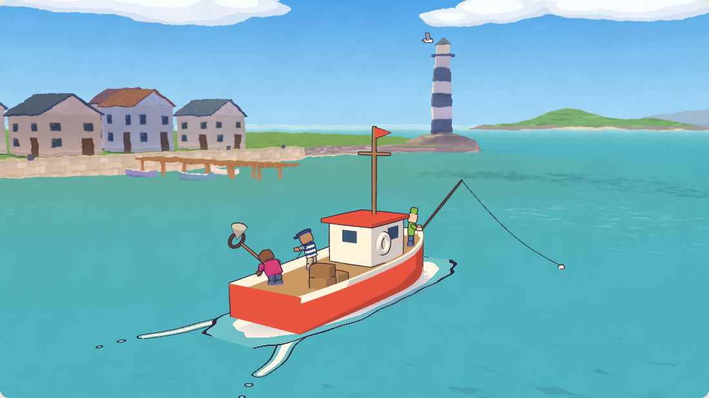
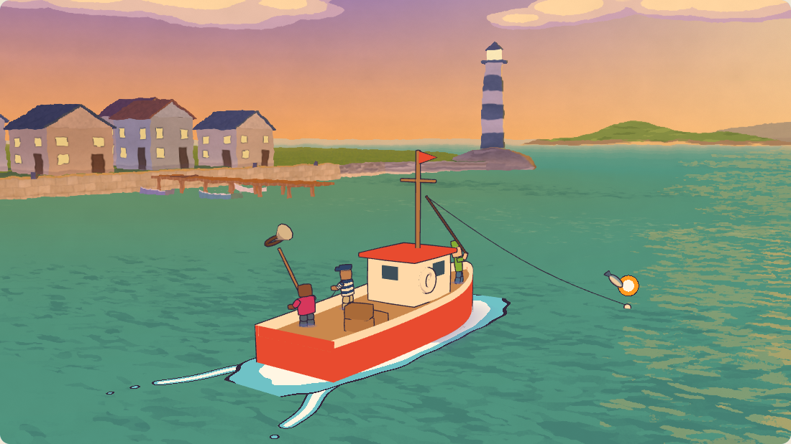
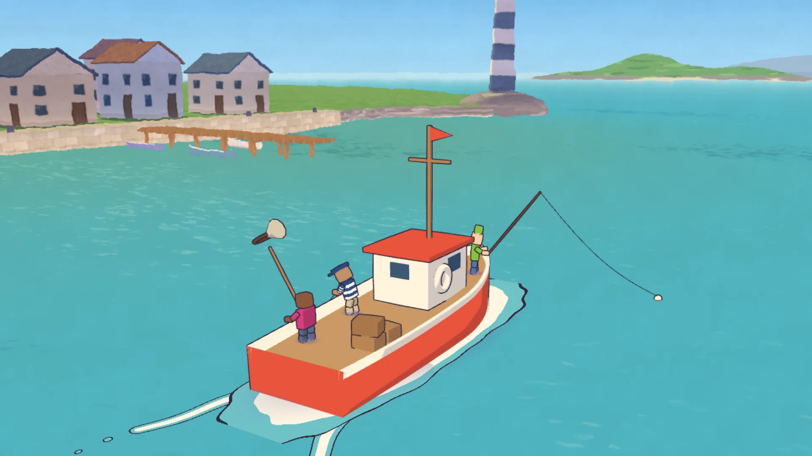
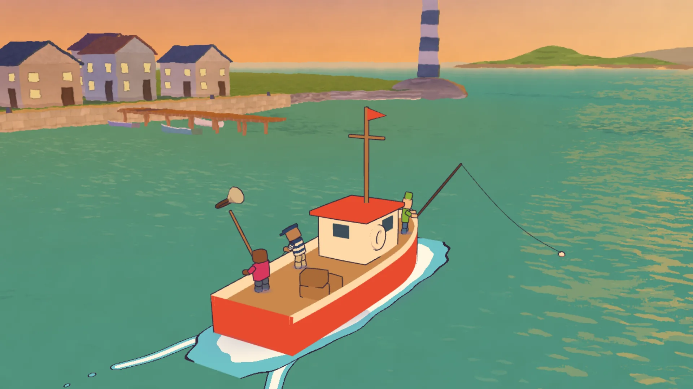
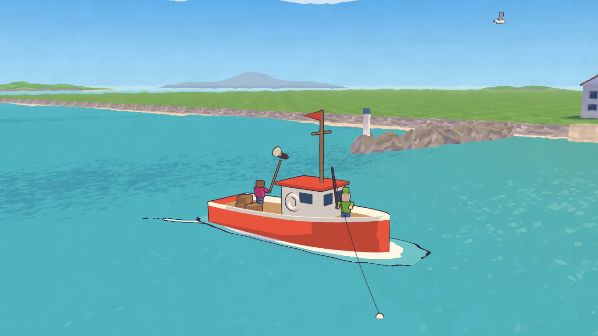
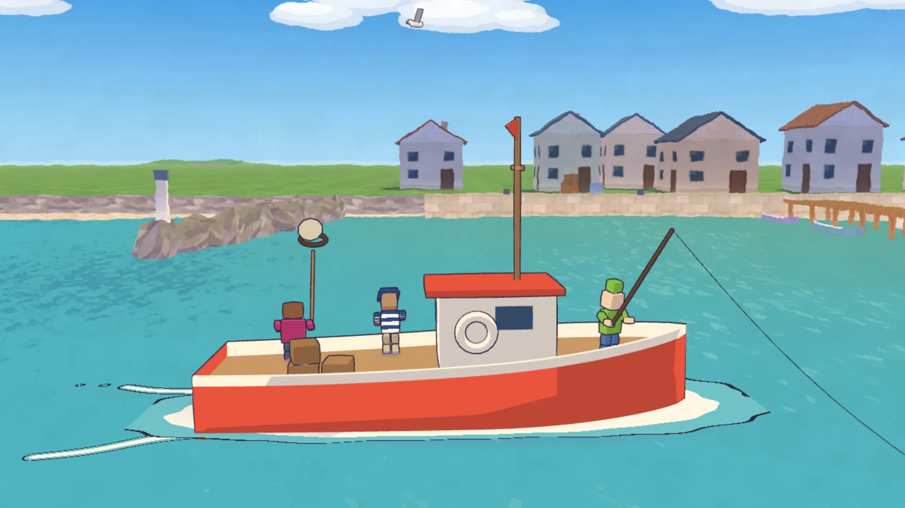

A holiday you keep in your pocket: a little boat, a crew that fishes for you, a painted sea that is always worth looking at, and other sailors drifting by to say hello.
Source: design/gdd/little-ocean/ 00–11 plus reviews/loop-1 and loop-2 · Last updated 2026-11-26 · This page is a condensed preview, not the source of truth.
Preview · look, vibe and HUD
Look and feel
A live painted-cel vignette rendered in the browser: painted sea, harbour and sky; inked boat, crew, buoy and effects. The sailing HUD from the UI screens below sits on top. It is a target for mood and readability, not a gameplay build, and values are approximate.
23/32
NE›
The Shallows
Mabel landed a Sand sprat
Pip landed a Harbour mackerel new
WASDSailSpaceAnchorCCrewJJournalEnterChatEscMenu
Drag to orbit. Look-and-vibe preview, not gameplay.
Static captures (in case WebGL is unavailable):

Day

DuskDrizzle
UI screens and HUD
Implementation mocks for the Little Ocean UMG pass. Every frame is authored at 1920×1080 and scaled to fit, so every px in the specs is a 1080p px. Open a frame at full size to judge the scale as a player would.
What changed in this pass (owner UX feedback, 2026-11-26)
Desktop scale. Body text 20 px, floor 18 px at 1080p (Xbox guideline 101 for PC), was 32 / 28 (a TV-distance value). Panels are 30–50% smaller. The always-visible HUD now covers 2.2% of the screen, down from 7.5%.
Only what helps right now. The crew list is gone from the HUD. You see the crew on deck, in the activity log and in the crew panel (C). The region name shows only when you enter a region. Speed shows only while you change the throttle.
Action bar of key prompts at the bottom left. Every prompt is also a mouse button, and it switches to pad glyphs on a gamepad. It changes with context (E Talk at a counter; screen prompts inside screens).
Activity log + chat above the bar. There is no box when idle. Lines fade after 12 s. Hover or L opens it with tabs. Routine catches are not logged.
One place, one verb. The Fishmonger sells, the Shipyard fits and paints, the Inn crew board hires. The "Second Hand" upgrade is gone.
Ship fitting (new doc 11). Hulls have S/M/L slots, a keel mount and a load limit. The Skiff can't carry the crate, hold and bunk together. The Swell keel needs the Cutter.
Paint and Decor. Colours and hull patterns, plus small objects (flag, roof decor, lamps, figurehead, name board) on the decor points of each hull frame: Skiff 5, Cutter 7. Looks only.
Lessons and checklists: design/ux/ui-knowledge.md. Spec: docs 10 and 11. Backgrounds are 1080p renders of the live preview scene, so the scale is true.
0
UI kit
Tokens, type, the two surfaces, input glyphs and icons every screen is built from.
Colour tokens (game UI, never themed)
Aubergine ink#33273BText on paper; Ink Glass base
Paper cream#FFF6E3Panels; text on Ink Glass
Cocoa#6B4A35Frames, primary button, bar fill
Wisteria#6E6AA8Focus ring, selection
Beacon amber#FF9B21Ping only
Collar crimson#D02A45Confirm button only
Type scale at 1080p (XAG 101 PC floor 18 px)
Style
Size / weight
Use
Screen title
28 / 600
Fishmonger, Shipyard
Heading
22 / 600
Section titles in panels
Body
20 / 600
Rows, names, buttons
Small (floor)
18 / 600
HUD, log, secondary lines
Glyph
13–15 / 800
Inside keycaps and pad discs only
Mock fonts: Fredoka for titles, Nunito for everything else (doc 09 picks the shipping pair). Old draft: 40 / 32 / 28 (TV scale).
Two surfaces

23/32
Ink Glass · HUD over the world
ETalkCCrewAConfirmBBackXRemoveYPaint
Action bar · keycaps and pad discs (letter inside, never colour alone)
Attention follows relevance (/clean-ui). At rest everything is Ambient: no plates, outlined text on the world, Shells hidden. An element gains its plate and grows only while it matters, then settles back by itself.
23/32
NE›
The Shallows
Mabel landed a Sand sprat
Pip landed a Harbour mackerel new
WASDSailSpaceAnchorCCrewJJournalEnterChatEscMenu
A. Resting state. Cargo, compass and key prompts are Ambient; Shells are hidden at sea; two log lines drift up and fade. The region name shows for 6 s on entry. Nothing on screen has a backing block.

Full
SW‹
Hold full. The crew's resting.
LSSailBAnchorViewCrew · Journal↑LogMenuMenu
6 kn
Head home to sell
B. Hold full (decision moment). Cargo is Focused for 6 s (plate, 1.2×), then returns to Ambient. Dusk + gamepad: outlined prompts stay legible.
23/32
NE›
Whale pod · NE · 240 m
AllCrewChat
Ana whales by the lighthouse!
Kai on my way
omw, see you thereEnter to send · Esc to close
WASDSailSpaceAnchorCCrewJJournalEnterChatEscMenu
Anchored
C. Enter pressed: chat opens. The box, history and input appear only now (Focused). Esc or send returns to bare fading lines. The ping marker is the one amber thing on the compass.
23/32
NE›
The Shallows
158
Pip landed a Harbour mackerel new
WASDSailSpaceAnchorCCrewJJournalEnterChatEscMenu
Tab held · peek
D. Peek (hold Tab / LB). Everything Focused, including Shells, for as long as it is held. Hiding never withholds information.
23/32
NE›
242+84
Sold 20 fish for 84 Shells
WASDSailSpaceAnchorCCrewJJournalEnterChatEscMenu
E. Value change. After a sale the Shells counter appears for a moment with "+84", then fades away again at sea.
States
Hidden · Ambient (no plate; cream glyphs, 1–2 px ink outline + soft shadow, 92%) · Focused (Ink Glass 70% plate, 1.2×, 150 ms ease) · Interruptive: none in normal play
Cargo
Ambient top-left · Focused 6 s when the hold fills, and in the Fishmonger
Shells
Hidden at sea · "+N" lift on change · Focused (plate, 1.2×) in Fishmonger, Shipyard, Inn · peek
Compass
Ambient ticks + letters, no strip · ping marker amber · region pill 6 s on entry
Prompts
Ambient outlined keycaps · Focused inside screens (screen prompts) · Settings: Full / Context / Off
Log + chat
Ambient lines fade 12 s, no box · hover/L = history (Focused) · Enter = chat box + input (Focused) · Esc closes
Peek
hold Tab / LB: all Focused while held
Speed
Ambient, only while the throttle changes (+3 s) or anchored
2
Fishmonger: sell
Selling only. One button sells the whole hold at fixed prices. Close with Esc. There is no ✕ button.

Fishmonger
Fine catch today!
Fish
Count
Each
Shells
Sand sprat
×9
2
18
Harbour mackerel
×6
3
18
Blue wrasse new
×3
5
15
Ribbon eel
×1
8
8
Sun flounder
×1
12
12
20 fishTotal 71Sell all
158
ESell allEscBack
A. Docked, E pressed: the catch table and Sell all. The bar shows the screen's own prompts.
Fishmonger
Fine catch today!
+71Shells
20 fish sold · 0/32 in the hold
229+71
ClickSkip
B. After the sale: 1.5 s summary with count-up, then it closes itself (click skips).
Fishmonger
Come back with a catch, dear.
Nothing to sell yet
0 fishSell all
158
ESell allEscBack
C. Empty hold: a plain line, Sell all disabled.
Panel
Paper 600×440 centred · world dimmed 32%
Rows
40 px · fish icon 24 · 20/600 · numbers right-aligned tabular · "new" chip for first sale of a species
Depth
E → Sell all = 2 presses; no confirm (05)
3
Shipyard: fit
A dedicated fitting screen. The boat is the interface: slots sit on the deck, the only meter is load, and every change is free to undo until Done. Buying gear happens here too, next to where it goes.

Shipyard
Fit Paint Decor
68
S · empty
M · Fish hold
S · Bunk
Load220 / 200 kg
20 kg too heavy for the Skiff. Remove the bunk or the hold, or get the Cutter.
Hull
SkiffS S M · 200 kg
In use
CutterS S M M L + keel · 650 kg
180
Shed & for sale
Fish crateS · 40 kg · +6 hold 20 kg too heavy for the Skiff
In the shed
Fish holdM · 120 kg · +12 hold
Fitted
BunkS · 60 kg · +1 berth
Fitted
Swell keelKeel · 220 kg · Opens The Swells Needs a keel mount (Cutter)
70
Deep holdL · 200 kg · +12 hold Needs an L slot (Cutter)
A. Skiff with the Fish hold and Bunk fitted. Dragging the Fish crate back to the S slot is refused: 220 / 200 kg, with the reason in words. Keel and Deep hold show why they cannot fit before you buy them.
Shipyard
Fit Paint Decor
36
S · Fish crate
M · Fish hold
L · empty
M · empty
S · Bunk
Keel mount · Swell keel
Load440 / 650 kg
Hold 26 → 32 · Swell keel fitted · The Swells open
B. Cutter bought: 5 slots and a keel mount. The Swell keel is fitted and the delta line shows only what changed. 440 / 650 kg leaves room for the Deep hold later.
Layout
boat view left (orbit with RMB) · rail right 560×888 · tabs top-left · Shells top-right
Fitting
drag item → slot, or click/A item then click/A slot · invalid slots dim + reason on hover · R removes to shed
Load
one bar 520×10, cocoa on cream; overflow drawn hatched past the end + words
Rail
Hull row (Skiff / Cutter) · one list = shed + for sale · each row: icon, name, size · kg · effect, state or price, reason line
Commit
Done saves; Cancel reverts fits (purchases stay in the shed) · ≥100 Shells buys ask once (D8)
4
Shipyard: paint and decor
Same yard, same boat view. Paint picks colours and a hull pattern from a curated palette. Decor places small objects on the decor points of this hull frame. Some are bought with Shells, and the best ones are earned by discovering places. Neither changes how she sails.
Shipyard
Fit Paint Decor
36
Roof · Potted fern (preview)
Roof point
Potted fernRoof point · looks only
30
WeathervaneRoof point · looks only
45
Gull statueRoof point · looks only Seen: the lighthouse
Earned
NothingRoof point · looks only
Keep it bare
On this boat
Masthead: Pennant · Rail: Brass lamp, Life ring · Stern: Name board "Marigold II" · 3 points empty
Cutter: 7 decor points · Skiff: 5. Decor has no weight and never uses gear slots.
A. Decor tab on the Cutter: 7 decor points shown as rings, only in this tab. The roof point is selected, and the Potted fern previews in place. The rail lists only objects that fit a roof point.
Shipyard
Fit Paint Decor
36
HullTrimSailPattern
Hull paint
Coral hull
Sea foam
Harbour blue
Biscuit
Deep water 40
Lantern 40
Dusk 40
Sail white 40
Wreck-wood Seen: Marigold wreck
Rosehip Buy
Sprout Buy
Ink Buy
Hover to try on. Owned paints are free to apply. Paint never changes how she sails.
CancelDone
ClickTry onTabNext tabQEPartEscCancelEnterDone
B. Paint tab, Hull: hover previews on the boat; locked swatches show their price or the discovery that earns them. Pattern is its own part tab.
no stats, no weight, never real money (brief §11) · hull switch: matching points refill, the rest go to the decor chest
5
Inn crew board: hire
Hiring a person is its own moment, away from the gear. A berth on the boat is the only requirement, which links crew to fitting without a crew economy.
Crew board
Berths 2 / 3
Mabel#1 · aboard
Pip#2 · aboard
Free berth#3
Looking for a boat
TomoPoints at whales before anyone else sees them.Steady hands · one-off fee, no wages
Hire · 50
68
EHireEscBack
A. Bunk fitted, so berth #3 is free. Hire Tomo for 50 Shells (one-off, no wages).
Crew board
Berths 2 / 2
Mabel#1 · aboard
Pip#2 · aboard
Looking for a boat
TomoPoints at whales before anyone else sees them.Steady hands · one-off fee, no wages
Hire No free bunk. The shipyard can fit one.
68
EscBack
B. No free berth: Hire disabled, with one line saying where to get a bunk. It is not repeated anywhere else.
Panel
Paper 640×420 · aboard row (dummy + name + slot) · free berths · candidates
Rules
fee 50 · needs a berth · crew without a berth wait at the Inn, never lost (04, 11)
6
Crew panel and journal
Crew information lives here now, not on the HUD. Both are read-only, open over the sea, and close with the same key.
Crew
At sea · read only
Mabel#1 · Hums and taps her foot
FishingSteady hands
Pip#2 · Waves at gulls
FishingQuick hands
Tomo#3 · Points at whales
Not in a fishing spotSteady hands
CCloseJJournal
23/32
A. Crew (C): name + slot number + state glyph and word, efficiency as words, never a number.
Journal
Fish · 7 of 11 seenPlaces · 2 of 5
Sand spratThe Shallows
Harbour mackerelThe Shallows
Blue wrasseThe Shallows
Ribbon eelThe Shallows
Not seen yet
Not seen yet
JCloseQETab
23/32
B. Journal (J): what you have seen. Silhouettes for the rest, and no percentages.
7
Pause menu and settings
Missing from the first draft. The world keeps moving behind the menu in solo play. HUD comfort settings live together under Display.
Paused
ResumeSettingsCompanion window F9ControlsQuit to desktopThe sea keeps going while you are here.
DisplayAudioControlsAccessibility
UI scale100%
HUD fade when idleOff8 s20 s
Action barFullContextOff
Activity log lines12 s
HUD styleAmbientAlways backed
Button promptsAutoKeyboardXboxPlayStation
Changes preview live behind this panel.
EscBackEnterSelect
A. Esc → Settings → Display: UI scale 80–150%, HUD fade, Action bar Full / Context / Off, log line life, HUD style Ambient / Always backed (plates on every element, for players who prefer them), prompt style.
8
Swell gate (no keel yet)
Show "not yet", never "game over". One hint, one log line, and the reason points at the Shipyard.
23/32
N‹
Mabel says the swell's too big for the Skiff
WASDSailSpaceAnchorCCrewJJournalEnterChatEscMenu
2 kn
The swell's too big for the Skiff. A keel would help.
A. Pushed back at the R2 edge: one hint per sail-out and one log line (the bark as a caption). The compass still shows the way home.
9
Companion window (512×320, actual size)
The desk-corner view. The control bar shrank from 64 to 40 DIP, so the sea gets 280 of the 320 px.
23/32
A. Hold, pin (always on top), mute, back to full view. No Shells, no chat, no prompts (08).
Size
512×320 DIP (08 owns) · bar 40 tall
Bar
fish 20 · bar 150×8 · count 18/700 · 3 buttons 32×32 (WCAG 2.2 ≥24)
Surface
Paper strip, 2 px top rule, no frame
10
First 10 minutes
The action bar already shows every key, so hints only explain why: "Sail out to find fish", not "press W".
0:00 docked
hint "Sail out to find fish" · bar shows WASD Sail
1:30 enter R1
region name 6 s · hint "Your crew fishes on their own. Enjoy the view."
~1:42 first fish
cargo +1 · log "Mabel landed a Sand sprat · new"
~5:56 hold full
cargo "Full" · log line · hint "Head home to sell" · harbour marker pulses once
~6:41 docked
bar inserts E Talk (highlighted) at the Fishmonger
~6:56 first sale
Shells +84 · hint "The shipyard can fit a bigger hold" (once)
~7–10 Shipyard
Fish hold auto-proposed into the M slot · Swell keel reads "Needs a keel mount (Cutter) · opens The Swells"
00 · Creative direction
Overview
creative-director (agent) for owner · source of truth: the concept brief (§12 = hard constraints)
Player fantasy. "I own a little boat. My crew takes care of the fishing, so I get to look at the horizon, wander toward whatever looks interesting, and wave at whoever is nearby." The player is a captain on holiday, not a fisherman and not a tycoon.
Hook. A cozy social hangout like a harbour chat room, and also a boat that keeps quietly working in a desktop corner while you do something else.
Session arc. Settle in → drift and look → small surprise → return to harbour with a full hold → linger socially or tuck into companion mode.
Painted-cel look on the ocean. Anything that acts is a flat inked cel (two-tone, #33273B inverted-hull line): boats, crew, NPC vendors, fish in pop-ups, interactables, whales, responsive buoys. Everything that stays is a soft unlined painting (Kuwahara post, violet shadows, haze): water, islands, harbour buildings, sky.
The water rule: the sea surface is painted, never inked. Its acting parts (wake, foam at the hull, landing splash, ping ripple) are hard-edged drawn VFX on twos. Raw sRGB, no tone mapping.
Pillars
Tie-break: P2 and brief §12 are absolute; then P1 > P3 > P4 > P5.
#
Pillar
This means
This does NOT mean
P1
The ocean is the attraction
Every system makes time on the water nicer; regions differ in look, sound, mood and fish.
Menus, spreadsheets or optimisation screens as the main activity.
P2
Hands off the line
Fishing is always automated by crew. Player verbs: sail, look, choose, sell, upgrade, chat.
Any timing/reeling/QTE minigame, catch-boost "assist", or active-play bonus that punishes idling.
P3
Curiosity is the currency of progress
Upgrades open places, not only bigger numbers. Exploration beats efficient routing.
Grind walls, optimal-route meta, daily chores, timers that punish absence.
P4
Together, never required
Other boats make the sea feel alive; sharing a sighting is the main exchange. Solo progress is complete and offline-capable.
One coherent painted-cel image: agents are flat inked cels, static things are soft paintings.
Realistic water, PBR gloss, bloom-heavy grading, outlines on scenery.
Prototype hypotheses
Panel: at least 8 external cozy/idle players, 45-minute session each, silent observer form, 5-point post-survey. All thresholds PROPOSED and tunable once before the test. Telemetry is a local CSV: time-to-first-sale, time-to-R2, chat count, ping-response latency, compact-mode minutes, fps/GPU/CPU samples.
ID
Hypothesis
PASS if
FAIL if
H1
Core solo loop is satisfying: sail → crew fishes → cargo fills → sell → upgrade → Region 2 opens.
≥75% make first sale in ≤8 min and unlock R2 in 20–35 min unaided; ≥70% rate "relaxing" ≥4/5; ≤1 player says "nothing to do while the crew fishes".
Median R2 unlock >45 or <12 min; or ≥3 ask for manual fishing or call it a spreadsheet.
H2
Painted-cel look reads and is liked.
3 blind stills: ≥70% use anime/painted/illustration words; ≥70% rate look ≥4/5; ≥60% say "the boats/people are drawn".
≥40% say "plastic", "mobile game" or "unfinished"; or <60 fps at 1080p on a GTX 1660 with post on.
H3
Harbour hangout feels alive (2–8 players). Now paper-tested (D3).
No visible jitter in ≥90% of samples at 150 ms RTT / 2% loss; ≥60% send ≥1 chat; ≥50% sail toward a ping within 60 s.
≥40% "didn't notice other people", ≥3 jitter complaints, or any loss of local control to network.
H4
Desktop companion mode is something people leave running.
≥50% use compact ≥5 min voluntarily; GPU ≤10%, CPU ≤5%, RAM ≤1.5 GB on reference PC; ≥60% rate ambient audio ≥4/5.
Compact costs >25% of full-mode GPU; or ≥40% call it pointless.
Scope
IN
1 harbour (social hub, Fishmonger, Shipyard, Inn crew board; D9), R1 (calm coastal) and R2 (swell), seamless with a soft transition band
R2 gate = Swell + Keel. Heavy swell pushes small boats back, never damages them. The Keel lets the boat push through. Amended by D9: the Keel is an item that needs the Cutter's keel mount; gate cost Cutter 180 + Keel 70 = 250; push effect unchanged.
02 push model, 03 band placement, 05 Keel price, 11 fit
D2
Companion mode: boat drifts in place, crew keeps fishing while the game runs, fishing pauses when cargo is full. No auto-sailing, auto-return or auto-sell.
08 owns; 04 defines HoldFull
D3
Hangout multiplayer = paper prototype only. No networking built. 06 specifies the design and a paper test protocol; code keeps clean seams.
Crew are visible, named inked cel characters (2–3 on the starter boat) with idle and fishing animations.
04, 09, 10
D5
Crew count: starter boat has 2 CrewSlots with 2 named crew; a 3rd can join (2–3 crew). Amended by D9: a fitted Bunk adds the 3rd berth and Tomo is hired at the Inn crew board (replaces Crew_2).
04, 05, 09, 10, 11
D6
Drifting/anchored boats still fish.BoatSpeedFactor at speed 0 must be > 0.
04 owns the value; 08 depends
D7
Crew look = faceless blocky dummies. Chunky low-poly blocks, no face decals, normal cel pipeline. Identity = body, shirt and pants colour blocks; names stay in UI with a swatch.
09 crew spec, 10 dummy icons, 04 names unchanged
D8
Consistency pass (2026-11-26). Owning doc wins: MaxTickDt 0.25 s (04); R2 weather Drizzle (03); one confirm for purchases ≥ 100 Shells (05); chat 140 chars (06); camera 28 m arm, FOV 60° (02); boat 8 m (02); first sale ≈ 6:56 (01).
04, 06, 07, 08, 09, 10
D9
Owner UX/economy pass (2026-11-26). (1) Desktop-scaled HUD (XAG 101 PC: body 20 px, floor 18 px at 1080p): cargo, Shells, compass, action bar of key prompts, activity log/chat bottom-left; no crew list; Ink Glass HUD plates, Paper screens. (2) Harbour = one place per verb: Fishmonger (sell), Shipyard (fit, buy gear and hulls, Paint and Decor), Inn crew board (hire). (3) Upgrades → ship fitting (11): hulls Skiff (start; S,S,M; 200 kg) and Cutter (180; S,S,M,M,L + keel mount; 650 kg); items FishCrate (starter), FishHold 60, Bunk 40, Keel 70 (needs the Cutter), DeepHold 300. Skiff squeeze: Crate + Hold + Bunk = 220 > 200 kg. (4) Tomo hired at the Inn for 50, one-off, needs a free berth. (5) Gate = Cutter 180 + Keel 70 = 250; R2 unlock A' 27.8 / B 19.8 / C 28.3 / D 25.2 min. (6) Save: ActiveHull, OwnedHulls, OwnedItems, Fitting, Cosmetics, crew ashore. (7) Cosmetics (paint, sail, pennant, bow ornament, name) bought 20–120 or earned by discoveries; never stats. Supersedes the old upgrade-count limit, scope line and HUD list.
The loop: sail out → crew fishes → hold fills → sail home → sell → fit the boat / hire crew → (Cutter + Keel) → Region 2. Each trip is 5–9 minutes; a 45-minute playtest holds about 5 trips, every gate-path purchase (FishHold, Bunk + Tomo, Cutter + Keel) and a first look at R2. This doc owns the session shape and PhaseKey; rates and prices live in 04/05, distances in 02/03.
Core rules
CONFIRMED Player verbs are sail, look, choose, sell, upgrade (fit, buy, hire; D9), chat. No fishing verb.
CONFIRMED Progress only while the app runs; nothing accrues while closed; no catch-up on load.
CONFIRMED D2 A full hold pauses fishing; it never stops sailing, nothing auto-returns or auto-sells.
PROPOSED Returning home is always the player's choice: one calm prompt and a harbour marker; no timer, decay or repeated nag.
CONFIRMED No loop step requires another player. PROPOSED No daily rewards or session timers.
States (PhaseKey)
PhaseKey
Entry
Fishing (04)
Exit
Docked
in dock trigger, speed < 0.5 m/s
none
throttle out → Sailing; counter → Selling
Selling
Fishmonger, Shipyard or Inn crew board screen open
none
close UI → Docked
Sailing
outside dock, CargoLoad < CargoCapacity
Fishing in a ZoneId, else NotInZone
hold fills → Returning; dock → Docked
Returning
outside dock, hold full
paused (HoldFull)
dock → Docked
Compact is a ViewMode overlay, not a phase. Returning describes the hold, not the heading: a player may keep exploring. The Fishmonger, Shipyard and Inn crew board are sub-screens of Selling (D9).
FTUE (first session, one line of text per step)
Step
Trigger
What happens
Target
1 Greet
new save
Docked; Mabel and Pip wave (pose only); "Ready when you are, Captain." Marker on R1 shallows
0:00
2 Cast off
player throttles
Controls hint fades after 5 s of steering
0:45
3 First fish
enter R1 ZoneId
First fish pop at 12 s; cargo bar appears with one pulse
~1:42
4 Hold full
hold full
Crew lounge; "Hold's full — fishmonger's open whenever you are." Harbour marker
~5:56
5 First sale
dock + Sell all
+~84 Shells; Shipyard highlighted once; FishHold (60) affordable and auto-proposed into the Skiff's M slot; Keel row reads "Needs a keel mount (Cutter) · opens The Swells"
~6:56
Idle 60 s at step 1: Pip points toward the shallows once, never again.
Worked: 0.75 + 0.75 + 20 / (5.0 × 0.9) + 0.75 + 0.25 = 0.75 + 0.75 + 4.44 + 0.75 + 0.25 = 6.94 min. Best case 5.85 min; slow case (2 min dock, 1.5 min travel each way, factor 0.85) 10.2 min. Slack to 8 min ≈ 15%. First lever if H1 fails: start cap 20 → 16 (−0.9 min).
Pacing targets
Milestone
Target
Model
Lever
First fish
≤ 2 min from spawn (≤ 15 s after zone entry)
1:42
04 offsets
First sale / first purchase
≤ 8 min
6.9 min (FishHold, 60)
05 cap / price, 04 rate
R2 unlock
20–35 min median
19.8–28.3 (23.8–34.0 with +20% slack; path A' 27.8)
05 gate cost (Cutter + Keel)
Trip length
5–10.5 min
4.96–10.44
04/05
45-min playtest
≥ 1 R2 trip
path A': R2 sale at 38.2 min
—
Sessions. Playtest: FTUE → 4 R1 trips (one Skiff fitting choice) → Cutter + Keel → 1–2 R2 trips (facilitator suggests compact once). Home session ASSUMPTION 20–60 min; any stopping point is safe. Companion: hold fills in ~4–8 min, then crew rest indefinitely; it rewards glancing back, never punishes absence.
Edge cases (selected)
Never leaves harbour: no catch, one Pip gesture at 60 s, nothing else.
Ignores full hold and explores: stays Returning, no repeated prompt.
Quit mid-trip: position, cargo, Shells saved; reload resumes in the same phase; no catch for time away.
Reaches R2 edge without Keel: swell push-back; Keel row hint in the Shipyard ("Needs a keel mount (Cutter) · opens The Swells").
A kinematic arcade boat simulated entirely on the client: no physics sim, fuel or damage. Set a throttle notch, let go, and the boat holds speed and heading, so sailing is "set course and look". The swell is the sea saying "not yet", never "game over".
PROPOSED Telegraph throttle, 5 notches; W/S or D-pad steps one notch and it persists without input.
PROPOSED Rudder spring-returns to centre. Turning in place at 50% rate below 0.5 kn so the boat never gets stuck facing a rock.
PROPOSED Anchor (Space / Y): drops if ≤ 2 kn (2.0 s), otherwise brakes at 1.5 m/s² first. Raising takes 2.0 s and resumes at Stop. Allowed everywhere.
PROPOSED Harbour speed cap 6 kn (3.09 m/s). Docking: within 25 m of a free berth at ≤ 3 kn, "Moor (E)" auto-glides in 3.0 s; casting off backs out 10 m.
CONFIRMED D1, D9 Swell push-back via PushVec; a fitted Keel (an ItemId that fits only the Cutter's keel mount) sets HasKeel and lets the boat push through. The player always keeps steering and throttle.
CONFIRMED D9Skiff and Cutter handle identically in the prototype; only the model and waterline differ (09, 11).
PROPOSED Without Keel, if northward speed < 0.3 m/s for 3 s in swell: one crew bark and one toast per sail-out ("Swell's too big for us, Cap'n. A Cutter with a keel would push through."). No forced turn.
PROPOSED Collisions remove the into-surface velocity, add a 0.5 m/s rebound and a wooden "bonk". No damage state exists. Remote boats are non-colliding ghosts.
PROPOSED Heave, pitch and roll are on the mesh only, never the camera. "Reduce motion" multiplies amplitudes by 0.25.
Boat states
State
Enter
Exit
Notes
Docked
Moor completes
Sailing on throttle
Locked to berth; Fishmonger, Shipyard and Inn crew board available
Sailing
cast off / anchor raised
Anchored, Docked, Stalled
Normal model
Stalled (sub)
stall condition
northward ≥ 0.3 m/s or no swell
Drives bark/toast only
Anchored
anchor dropped
Sailing after raise
Crew still fish in a ZoneId
CompactHold
ViewMode = Compact
previous state on Full
D2: PushVec × 0, speed eased to 0 over 4 s, circling ±3 m
F2 AccelerationBoatSpeed += clamp(Target − BoatSpeed, −Decel·dt, Accel·dt). 0 → 12 kn in 6.0 s; coasting 12 kn → 0 in 8.0 s. Stop → Full covers 6.17² / 2.06 = 18.5 m.
F3 Turn rateTurnRate(v) = 45°/s × lerp(1.0, 0.6, v / BoatMaxSpeed). At Full 27°/s → radius 6.17 / 0.471 = 13.1 m (~1.6 boat lengths, boat 8 m). At Slow 39°/s → 3.0 m.
F4 Swell strength (field owned by 03) SwellStrength = s((y − 500) / 150), s(t) = 3t² − 2t³; 1 for y ≥ 650.
F5 Push vectorPushVec = SwellDir × PushMax × SwellStrength(p) × (1 − KeelResist·HasKeel), SwellDir = (0, −1), PushMax = 1.25 × BoatMaxSpeed = 7.71 m/s. World-edge bands use the same formula with KeelResist 0.
F6 Stall without Keel (heading north at Full): equilibrium when 7.71·s(t) = 6.17 → s = 0.80 → t ≈ 0.713 → y ≈ 607 m, ~107 m into the band; releasing throttle drifts it back to ~500 with no snap. With Keel: max push 1.16 m/s; net north 5.01 m/s (9.7 kn), south 7.33 m/s; band crossing 150 / 5.59 ≈ 27 s.
F7 Cosmetic motionHeave = A_h·sin(2πt/7 s), Roll = A_r·sin(2πt/5.3 s): R1 0.15 m / 2°; full swell no Keel 0.6 m / 8°; with Keel 0.45 m / 5°.
Edge cases (selected)
Anchored in the band without Keel: anchor holds; no exploit, R2 species start at y = 650.
Corrupt save puts an un-Keeled boat at y ≥ 650: push carries it to ~500 in < 60 s, no teleport.
Swell plus world-edge overlap: push vectors sum, magnitude clamped to PushMax.
Frame hitch: dt clamped to 0.1 s per substep, max 4 substeps.
Feel and camera
Input to visible response ≤ 100 ms. The swell must read as lifting, not hitting: heave rises before speed falls, no shake, no camera roll. Camera: spring arm 28 m, pitch −18°, FOV 60°, zoom 14–60 m in 3 presets, orbit with lag 0.15 s, auto-recentre after 4 s above 2 kn. Compact framing: fixed 3/4 side view, 18 m, pitch −12°, boat in lower third.
Tuning knobs
Knob
Default
Safe range
Affects
BoatMaxSpeed
6.17 m/s
4.6–7.7
All travel times, first sale
Accel / Decel
1.03 / 0.77
0.5–2.0
Weightiness
TurnMax
45°/s
30–60
Responsiveness
HarbourSpeedCap
3.09 m/s
2.0–4.1
Basin exit time
PushMax multiplier
1.25 ×
1.1–1.6 (must stay > 1.0)
Stall depth
KeelResist
0.85
0.7–0.95
R2 travel speed
StallToastDelay
3 s
1–6
Gate readability
Acceptance criteria
Stop → Full reaches 12 kn ± 0.3 in 6.0 s ± 0.2 (automated).
Without Keel at Full north, never past y = 615 m in 5 min from any of 20 x positions. (H1 gate)
With Keel, harbour mouth → y = 650 in ≤ 115 s.
No path reduces anything but position/speed; no damage or health variable exists. (§12)
Stall toast within 4 s, at most once per sail-out; ≥ 6/8 testers can say why they could not enter R2.
Zero camera-roll frames; ≥ 6/8 report no motion discomfort.
In CompactHold, boat stays within 5 m of its hold point for 30 min, including in R2. (H4)
One continuous hand-built sea: a sheltered Harbour, the warm R1_Shallows, a 150 m TransitionBand, and the northern R2_Swells ("The Rolling Swells"). All region logic is an analytic function of boat position, with no streaming or level load. From the stall line the Thunder Arch is ≈ 450 m away: the "not yet" moment always shows the reward.
8 berths B1–B8 (x = −70 + 20·i, y = −130); one place per verb (D9): Fishmonger (−90,−150, sell), Inn crew board (0,−155, hire), Shipyard slipway (90,−150, fit/buy/paint; run by the Shipwright NPC); mingle water x ±80, y −110..−40; no fishing
R1_Shallows
1
x ±700, y 0..500 (0.70 km²)
Always clear, warm palette
TransitionBand
—
y 500..650 (150 m)
Blend weight drives palette, haze, audio, motion, swell; label flips at y = 575; no colliding geometry y 450..700
R2_Swells
2
x ±700, y 650..1300 (0.91 km²)
Full swell, overcast, drizzle; GateRequirement = Keel (fitted on the Cutter: HasKeel)
Z_R1 / Z_R2
—
y 0..650 minus 60 m round the mouth / y 650..1300
Species switch is hard at y = 650, so an un-Keeled boat (stall ≈ 607) can see but never fish R2
Swell telegraphing (cozy, no damage)
Distance
Channel
Signal
Harbour
Dialogue
Shipwright (Shipyard): "Those northern swells bounce a little Skiff like a cork. A Cutter with a keel, now..."
Anywhere in R1
Sky/palette
North horizon slate-teal; R2 sea stacks painted in haze
≤ 300 m
Audio
Low surf roar fades in (0 → −12 dB at y = 500)
y = 500
Landmark
Inked red/cream Swell Buoys; bob grows; bells clank
Entering the radius adds a "seen" journal entry, a 4 s toast and an inked ping ripple. The entry itself is the reward PROPOSED. CONFIRMED D9 Some also unlock a cosmetic (Marigold wreck → "Wreck-wood" hull paint; whale pod seen → "Whale-song sail"; all R1 places seen → "Shallows pennant"): a journal stamp and one log line, never a stat.
Id
Name
Pos (x, y)
Radius
Requirement
Hook
Disc_GullLighthouse
Gull Point Lighthouse
(−450, 80)
60 m
none
Visible from harbour; dusk beam steers you home from R2
Disc_MarigoldWreck
Wreck of the Marigold
(250, 300)
40 m
none
Mast and dark hull under painted water
Disc_TurtleRock
Turtle Rock
(620, 180)
50 m
none
Off-route east; rewards wandering
Disc_ThunderArch
Thunder Arch
(−300, 1000)
60 m
Keel
Blowhole spouts on each swell crest (7 s)
Disc_BellBuoy
Lantern Bell Buoy
(350, 1180)
40 m
Keel + Drizzle
Lantern lit and bell rings only in drizzle
WeatherPROPOSED: Drizzle, R2 only, deterministic from the session clock: Clear 6 min → 30 s fade → Drizzle 4 min → 30 s fade. Visual and audio only. Encounter laneE_WhalePod: y = 350, x −700 → 700 at 2 m/s (≈ 11.7 min), inside R1 so everyone can reach it.
Travel times (F2, base boat 12 kn)
Leg
Distance
Time
Notes
Berth → mouth
100 m
34 s
harbour cap 3.09 m/s
Mouth → Z_R1 edge
60 m
10.5 s
ramp 3.09 → 6.17
Berth → R1 fishing
160 m
≈ 45 s
Mouth → band start (y 500)
500 m
82 s
Berth → R2 edge (y 500)
600 m
≈ 116 s
target 60–120 s
Band crossing with Keel
150 m
27 s
02 F6
Berth → R2 proper (y 650), Keel
750 m
≈ 143 s
Berth → Thunder Arch, Keel
≈ 1144 m
≈ 219 s
R2 leg at net 5.0 m/s
R2 edge → berth
750 m
≈ 137 s
swell assists south
Mouth → Lighthouse
457 m
75 s
R1 east–west crossing
1400 m
227 s
F1 Band blendw(y) = s(clamp((y − 500)/150, 0, 1)); y = 575 → w = 0.5. F3 H1 sanity: 45 s out + 4–6 min fill + 45 s back + 3 s moor ≈ 5.5–7.5 min ≤ 8 min.
Feel. When w first reaches 1, a 4 s musical swell sting plays once per session. The band must never feel like a wall.
Acceptance criteria
Berth → y = 500 takes 116 s ± 5 (autopilot test). (H1)
No level load or hitch > 33 ms crossing y 500–650. (H1/H2)
Without Keel no boat ever receives an R2 species (20-x sweep). (H1 gate)
≥ 6/8 testers point north when asked where they want to go next, before unlocking it. (P3)
≥ 5/8 find ≥ 3 of 5 discoveries in 45 min; ≥ 2/8 find the Bell Buoy. (P3)
No region, weather or discovery state alters a health or damage value. (§12)
Named, visible crew fish automatically whenever the app is running and the boat is inside a fishing ZoneId. A per-crew accumulator plus a weighted species roll fills the hold at a gentle, predictable pace; at capacity fishing pauses (HoldFull) until the player sells. There is no player fishing input of any kind.
Core rules
CONFIRMED No manual fishing; no input, timing or minigame affects catch; no active-play bonus.
CONFIRMED Crew fish only while the process runs and the boat is in a ZoneId (never Harbour). No offline fishing; no catch-up on load or wake.
CONFIRMED D4/D5/D7/D9 Mabel and Pip start; a 3rd CrewSlot comes from a fitted Bunk (11) and Tomo is hired at the Inn crew board.
CONFIRMED D9CargoCapacity and CrewBerths come from doc 11 (hull + fitted items); this doc only consumes them. ActiveCrew = min(Hired, CrewBerths).
PROPOSED One stat, Efficiency (1.0 for all prototype crew). Traits are flavour and idle choice only. No wages, morale or timers.
CONFIRMED D2 At capacity, accumulation stops (nothing banks), crew lounge, sailing unaffected; resumes after selling. Same in Full and Compact.
PROPOSED 1 fish = 1 cargo unit; fish never spoil. Rarity tiers Common, Uncommon, UncommonPlus (cap). OnFishLanded(SpeciesId, RegionId) is the post-prototype rare-drop hook.
Hiring (Inn crew board) CONFIRMED D9
Crew are hired at the Inn crew board on the quay while Docked, a separate place from fitting: the Shipyard only provides berths (the Bunk).
Prototype candidate: Tomo only. Fee 50 Shells, one-off, no wages PROPOSED (price owned by 05). Bunk 40 + hire 50 = 90, so crew-first pacing (path C) is unchanged.
Needs a free berth (CrewBerths > Hired); otherwise Hire is disabled: "No free bunk. The shipyard can fit one." Hired crew take the next slot (Tomo = 3) and board at once.
If a refit drops berths below hired crew, the highest-slot crew member waits at the Inn: listed as "Waiting at the Inn", never lost, re-boards automatically when a berth is free while Docked. The Shipyard warns before Done.
Fishing sub-states
State
Condition
Crew animation
Accumulates
NotInZone
outside any ZoneId (harbour, open water, swell band)
idle: coil rope, chat
No
Fishing
in ZoneId and hold not full
fishing loop; 1.2 s haul per fish
Yes
HoldFull
hold full (anywhere)
lounge: sit on crates, wave at boats
No
Formulas
F1 Catch rateCatchRatePerMin = Σ Efficiency_c × BaseRate(RegionTier) × BoatSpeedFactor. Range 0 (out of zone) to 7.5 (3 crew, R1, slow).
Worked examples (factor 1.0 / at average 0.9)
Setup
R1 rate /min
R1 fill
R2 rate /min
R2 fill 32
2 crew
5.0 / 4.5
4.0 / 4.44 min (cap 20)
4.5 / 4.05
7.9 min
3 crew
7.5 / 6.75
4.27 / 4.74 min (cap 32)
6.75 / 6.08
5.27 min
F2 BoatSpeedFactors = clamp(BoatSpeed / BoatMaxSpeed, 0, 1); factor = 1.0 if s ≤ 0.6, else 1.0 − 0.375 × (s − 0.6). Example s = 0.8 → 0.925. Full throttle 0.85. 1.0 at speed 0 (D6; 08 depends on it). Drifting and looking is the natural posture; transit is only 15% slower.
F4 AccumulatorProgress_c += Efficiency × BaseRate × BoatSpeedFactor × min(dt, MaxTickDt) / 60; each whole unit lands a fish. Start offsets 0.5 / 0.0 / 0.25 → with 2 crew in R1, first fish 12 s after zone entry, then every 12 s. After a 3-hour sleep, the next tick adds at most 0.25 s of fishing (≈ 0.02 fish, so none lands).
DT_Species (all values ASSUMPTION, validate by H1 time-to-R2)
SpeciesId
Region
Rarity
Weight
BaseValue
SandSprat
R1
Common
40
2
HarbourMackerel
R1
Common
30
3
BlueWrasse
R1
Common
15
5
RibbonEel
R1
Uncommon
8
8
SunFlounder
R1
Uncommon
5
12
LanternPuffer
R1
UncommonPlus
2
25
SwellBream
R2
Common
35
5
KelpPollock
R2
Common
30
6
StripeBonito
R2
Common
20
8
MoonSnapper
R2
Uncommon
10
13
GlassSquid
R2
Uncommon
4
20
PearlTuna
R2
UncommonPlus
1
40
Crew roster (flavour is pose or idle action only, no faces)
CrewId
Slot
Source
Efficiency
Flavour
Mabel
1
starter
1.0
Leans on the rail; coils rope; lies on the cargo when the hold is full
Pip
2
starter
1.0
Restless; waves both arms at every passing boat
Tomo
3
hired at the Inn crew board, 50 Shells; needs a Bunk berth
1.0
Steady; points an arm toward whales and pings
Edge cases (selected)
Hold full in companion for hours: zero accumulation, nothing lost or banked.
In a TransitionBand: region with blend weight ≥ 0.5 supplies rate and table; tie → lower tier.
Two crew land in one frame: both land; pop-ups offset 0.3 s.
Hire with no free berth: disabled, no Shells taken. Bunk unfitted or hull switched with Tomo aboard: Tomo waits at the Inn, rate drops to 2 crew, re-boards when a berth is free.
Feel. Rhythm, not reward spam: a landing every ~12 s with 2 crew in R1. Landing audio is a soft plop and "tok" (≤ −18 LUFS short-term); UncommonPlus adds one chime; no rising-pitch jackpot.
Acceptance criteria
2 crew anchored in R1, cap 20: hold fills in 240 s ± 1 s. (H1)
First fish ≤ 15 s after entering an R1 zone. (H1)
In Harbour or outside zones, CargoLoad unchanged over 5 min. (§12)
HoldFull: 30 min compact adds 0 fish; selling resumes within 1 tick. (D2, H4)
Close 10 min and reload: cargo identical; suspend PC 10 min: ≤ 0.25 s of catch. (§12)
10,000 simulated R1 rolls: each species within ±1 pp of its weight.
No input binding alters catch (code review). (§12, P2)
≤ 1 of ≥ 8 players names "nothing to do while the crew fishes". (H1)
05 · Core · MVP
Economy and upgrades
systems-designer (A1) · pillars P3 (primary), P2, P4 · owns every price (sizes and fit rules: 11) · effort ~3 dev-days
36/ 40
R15
R25
R34
R44
R55
R64
R75
R84
Currency
Shells, start 0
CargoCapacity
20 start · 32 / 26 / 20 Skiff · 32 / 44 Cutter
Prices
Hold 60 · Bunk 40 · hire 50 · Cutter 180 · Keel 70 · Deep hold 300
Gate cost
Cutter 180 + Keel 70 = 250
First sale
84 Shells at 6.9 min
R2 unlock paths
A' 27.8 · B 19.8 · C 28.3 · D 25.2 min
A closed, personal, NPC-only economy. Shells come only from selling fish to the Fishmonger at fixed prices and are spent in two places (D9): the Shipyard (items, the Cutter hull, cosmetics; doc 11) and the Inn crew board (hiring Tomo; doc 04). Purchases open the sea (Cutter + Keel), make trips longer and calmer (holds) and bring a third crew member aboard (Bunk + hire). Every purchase order reaches R2 within a ~9-minute window, so "what should I buy?" never has a wrong answer. The Cutter with her Keel feels like buying a ticket to the horizon.
Core rules
CONFIRMED Shells is the only currency (integer ≥ 0). Earned only at the Fishmonger; spent only at NPC places. No player-to-player transfer of Shells, fish, items or hulls; no shared market; nothing bought with real money, cosmetics included.
CONFIRMED Fixed prices per species; no supply/demand, daily price or bulk penalty.
PROPOSED One action: Sell all while Docked; partial holds may be sold any time. Start: Skiff with the FishCrate fitted, 2 crew, CargoCapacity 14 + 6 = 20.
CONFIRMED D9 One place per verb, both only while Docked. Each item, hull and cosmetic is bought once and owned forever; fitting is free and reversible (11). Unaffordable shows "Need N more Shells" (no debt). Each transaction saves at once.
CONFIRMED D1, D9Keel is the GateRequirement for R2_Swells; it needs the Cutter's keel mount, so the gate cost is Cutter + Keel.
CONFIRMED D9 Catalogue: 2 hulls, 5 items, 1 hire, a small cosmetic set. No wages, rent, repair or timers. Cosmetics never change stats; some are earned by discoveries.
Catalogue and prices (05 owns prices; sizes, weights and fit in 11; prices ASSUMPTION, validate by H1 time-to-R2)
Id
Where
Price
Effect (11)
Why
FishCrate
Shipyard
starter
+6 hold (fitted at start)
Start capacity 20
FishHold
Shipyard
60
+12 hold
Longer, calmer trips; affordable right after first sale
Bunk
Shipyard
40
+1 berth
Makes room for Tomo
Hire Tomo (CrewId)
Inn crew board
50
3rd crew; +50% catch rate
A visible new character on deck; Bunk + hire = 90
Cutter (HullId)
Shipyard
180
Bigger hull, keel mount, everything fits
The bigger boat (P1)
Keel
Shipyard
70
HasKeel: ignore R2 swell push-back
Opens a place, not a number; Cutter + Keel = 250
DeepHold
Shipyard
300
+12 hold (Cutter L slot)
Post-gate goal; can be cut without affecting H1
Cosmetics
Shipyard, Paint and Decor tabs
20–120
none (look only)
Identity in the harbour (P4); post-gate Shell sink
Transactions happen only in Selling: Sell all (Fishmonger), Buy(ItemId | HullId | CosmeticId) (Shipyard), Hire(CrewId) (Inn crew board). Fit and unfit cost nothing and are not economy transactions.
F2 CycleCycleMin = CargoCapacity / (CatchRatePerMin × 0.9) + TravelOut + TravelBack + DockMin. Start in R1: 4.44 + 0.75 + 0.75 + 0.5 = 6.44 min. R2 travel with Keel 2.38 / 2.28 min (03).
F3 IncomeShellsPerMin = E[SalePayout] / CycleMin
Setup (hull: fitted items → cap, crew)
Fill
Cycle
Payout
Shells/min
R1 start, Skiff: Crate (20, 2 crew)
4.44
6.44
84
13.0
R1 Skiff: Crate + Hold (32, 2 crew)
7.11
9.11
134
14.7
R1 Skiff: Crate + Bunk (20, 3 crew)
2.96
4.96
84
16.9
R1 Skiff: Hold + Bunk (26, 3 crew)
3.85
5.85
109
18.6
R1 Cutter: Crate + Hold + Bunk (32, 3 crew)
4.74
6.74
134
19.9
R2 Cutter: Crate + Hold + Bunk + Keel (32, 3 crew)
5.27
10.44
245
23.5
R2 pays ~18% more per minute than R1: a reason to go, never a requirement to stay. (Loop 2: do not tune below +10%.)
F4 Time to gateT_R2 = t_firstSale + Σ CycleMin_k until Shells − spent ≥ gate cost (Cutter 180 + Keel 70 = 250). Re-run with doc 11's catalogue (11 F4).
Path
Purchases
Modelled R2 unlock
A' (intended, cheapest first)
FishHold → Bunk + hire Tomo (crate to shed) → Cutter + Keel
27.8 min (4 trips; was 29.5)
B straight-save
Cutter + Keel only
19.8 min (3 trips)
C crew first
Bunk + hire → Cutter + Keel
28.3 min (5 trips)
D hold only
FishHold → Cutter + Keel
25.2 min (3 trips)
Path A' sales: 6.94 (+84, Hold −60 → 24), 16.05 (+134 → 158; Bunk −40, hire −50 → 68; Skiff Hold + Bunk, cap 26), 21.90 (+109 → 177), 27.75 (+109 → 286; Cutter + Keel −250 → 36). B, C and D spend exactly what they spent before (Bunk + hire = 90, Cutter + Keel = 250), so their times are unchanged. With +20% real-player slack: 23.8–34.0 min, inside H1's 20–35 (A' no longer sits on the 35-min edge); all paths far from FAIL (<12, >45). Fastest possible 18.5 min. Variance: 3 trips = 252 ± 30 Shells, so about half of path-B players need a 4th trip (→ 26.3 min). Gate cost stays 250.
Minute-by-minute, path A' (factor 0.9)
Min
Event
Phase
Cargo
Shells
0.00
Spawn docked on the Skiff (Crate fitted); crew greet
Docked
0/20
0
0.75
Leave harbour
Sailing
0/20
0
1.50
Enter R1 zone; first fish 1.70
Sailing
0→
0
5.94
Hold full
Returning
20/20
0
6.94
First sale +84; buy FishHold −60, fit Crate + Hold
Selling
0/32
24
14.80
Hold full
Returning
32/32
24
16.05
Sale +134; buy Bunk −40, hire Tomo −50; Crate to shed (Hold + Bunk)
Selling
0/26
68
20.65
Hold full (3 crew; 26 / 6.75 = 3.85 min)
Returning
26/26
68
21.90
Sale +109
Selling
0/26
177
26.50
Hold full
Returning
26/26
177
27.75
Sale +109; buy Cutter −180 + Keel −70; refit Crate + Hold + Bunk + Keel (440 / 650 kg)
Selling
0/32
36
30.13
Enter R2 zone (143 s crossing)
Sailing
0/32
36
35.40
Hold full (R2)
Returning
32/32
36
38.18
Sale +245 (137 s back)
Selling
0/32
281
48.62
Next R2 sale +245; buy DeepHold −300
Selling
0/44
226
Within 45 min, path A' sees every gameplay purchase except DeepHold (it lands on the 2nd R2 trip, ~48.6 min), one Skiff fitting choice, 1 full R2 trip and most of a 2nd. Cosmetics (20–120) are affordable from ~38 min and compete with DeepHold; neither affects H1.
Edge cases (selected)
Buy Keel or DeepHold before the Cutter: allowed; it waits in the shed tagged "Needs a keel mount (Cutter)" / "Needs an L slot (Cutter)", shown before purchase too. The gate opens only when the Keel is fitted.
Hire with no free berth: disabled ("No free bunk"); no Shells taken (04).
Fit, unfit, swap or switch hull: free; no Shells change; nothing to refund. Unfitting below CargoLoad is blocked (11).
Rush Cutter + Keel at 19 min: allowed; Crate + Keel (cap 20, 2 crew) fills in R2 in 4.9 min for ≈ 153; holds and Bunk stay affordable later.
Crash between sale and save: one transaction; on failure revert to pre-sale (07).
Tuning knobs
Knob
Default
Safe range
Affects
Gate cost (Cutter + Keel)
250 (180 + 70)
180–340
Time-to-R2 (±84 ≈ ±1 trip ≈ ±6 min)
Cutter / Keel price
180 / 70
140–240 / 50–120
Share of the gate; keep the sum ≈ 250
FishHold price
60
40–84
Must stay ≤ first expected payout (84)
Bunk price / hire fee
40 / 50
25–60 / 30–90
When Tomo joins; keep Bunk + hire ≈ 90 (path C)
DeepHold price
300
200–400
R2 goal only
Cosmetic prices
20–120
×0.5–2
Post-gate Shell sink; no H1 effect
Start capacity
20
16–28
First sale (+4 ≈ +0.9 min)
BaseValue scale
1.0
0.7–1.4
All pacing; prefer cost knobs
Feel. No haggling; no confirm for sale; one confirm for purchases ≥ 100 Shells (D8). Sale summary ≤ 2 s and dismissible. Never show Shells/min or efficiency stats. Fishmonger, Shipwright NPC (runs the Shipyard) and Innkeeper are inked; when the Keel is fitted on the Cutter, a short hammering in the yard, then the R2 swell on the horizon gets a brief painted light-shaft: the sea, not a number, is the reward.
Acceptance criteria
Selling the F1 example cargo yields exactly 71 Shells and empties the hold.
No code path changes a price at runtime.
Without the Keel fitted the boat cannot remain in R2; fitting it on the Cutter and pressing Done removes push-back at once, no reload. (D1, D9)
Shells never go below 0; disabled buttons cannot be activated by keyboard or gamepad.
H1: median time-to-R2 20–35 min; ≥75% first sale ≤ 8 min; ≥60% buy an item within 1 min of first sale.
≤ 2 players call the Shipyard or economy "spreadsheet" or "grind". (P3)
Fit, unfit and hull switch never change Shells (log check over a full H1 session). (11)
Simulated path A' (factor 0.9) reproduces the F4 trip list: sales at 6.94 / 16.05 / 21.90 / 27.75, Shells 36 after the gate purchase.
06 · Feature · MVP (paper)
Harbour hangout multiplayer
network-programmer (A4, technical-director remit) · pillar P4 · seams ~1.5 dev-days; full build later ~30–35 dev-days
35/ 40
R15
R25
R34
R44
R54
R64
R75
R84
Room cap
Hard 8 / Soft 6
SnapshotHz / InterpDelayMs
5 Hz / 450 ms
Bandwidth (N = 8)
4.52 down / 2.43 up kbit/s
Encounter
700 s pass, 300 m journal radius
Cost, option B
~$15–25 per 1k CCU / month
Paper prototype only (D3). No networking is built. This doc is the spec, a paper test protocol for H3, and the code seams the solo build must keep. The solo whale encounter is the one live piece.
Up to 8 captains share a harbour room. Each client simulates its own boat and sends a small PresenceSnapshot 5 times a second through a lightweight relay; clients draw remote boats 450 ms in the past. Nothing that affects progress (catch, Shells, cargo, upgrades) is ever sent.
Core rules
CONFIRMED Local movement never waits on the network; presence calls are fire-and-forget. Only cosmetic presence is synced.
PROPOSED Matching in order: valid RejoinToken (< 120 s) → a Steam friend's room → fullest room below SoftCap → any room below HardCap → new room. Rebalance only while docked, so boats never vanish at sea.
PROPOSED Presence states: Connecting, Docked, Sailing, Compact, Away (300 s idle), Stale (no data 3 s), Gone.
PROPOSED Chat: 140 chars, token bucket of 3 refilling 1 per 2 s, duplicate drop (3× in 30 s), word filter to ***. Mute per session; Block persists locally. No history beyond the session.
PROPOSED Encounter ping is owned by a relay timer (clients never trigger): first U(240, 480) s after room creation with ≥ 2 players, then every U(900, 1500) s. Clients dedupe by instance id and simulate the pod on 03's lane. Latecomers see it if ≥ 20 s remain. Everyone within 300 m gets the journal entry: no "first", no race.
PROPOSED Relay drops snapshots implying > 9.26 m/s + 2 m slack and clamps to map bounds. A cheater can only fake their own boat's position.
Connection states: Offline → Joining → InRoom → (3 s silent) Degraded → (10 s) Reconnecting (backoff 2, 4, 8, 16, 30 s) → InRoom or Offline. Local sailing and fishing run unchanged in every state.
Code seams the solo build must keep
IPresenceService GetState() · RequestJoin(Params) · Leave() · PublishLocal(Snapshot) · GetRemoteBoats(RenderTimeS, Out)
IChatService Send(Text) -> Sent|RateLimited|Filtered|TooLong|Offline · SetMuted(Id, bMuted) · Report(Id) [post-prototype]
IEncounterBroadcast GetActivePings(Out) + FOnEncounterPing delegate
Prototype bindings: FOfflinePresenceService (state Offline, no remote boats)
FOfflineChatService (Send -> Offline, chat UI hidden)
FOfflineEncounterBroadcast: LOCAL TIMER, first U(600, 900) s, then every U(1200, 1800) s,
same E_WhalePod lane and ping UI, no chat line, reward = journal entry only
Optional (1 d): FRecordedPresenceService replays 7 recorded paths for mock-ups (not networking)
Formulas
F1 Interpolation delayInterpDelayMs = (1 + LossTolerance) × 1000 / SnapshotHz + JitterMarginMs = 2 × 200 + 50 = 450 ms (4 Hz → 550, 10 Hz → 250). Remote boats appear ~525 ms behind, i.e. 0.525 × 6.17 = 3.2 m: invisible, since boats never touch.
F2 Underruns at 2% iid loss: p² = 0.0004 per slot → ~0.12 extrapolation events/min/boat, each ≤ 200 ms.
F3 Turn errorErr ≈ v × ω × t² / 2: 6.17 × 0.471 × 0.04 / 2 = 0.058 m at 0.2 s; 0.13 m at the 300 ms cap.
F4 Visible pop (camera per 02: 28 m arm, FOV 60° horizontal, 1920 px): 0.0168 m/px; corrections blended over 250 ms, so a 0.5 m error moves ≈ 2.0 px/frame (a glide, not a pop). A 0.15 m pop is now ≈ 8.9 px, so the ≤ 1% pop budget matters more. Errors > 25 m snap with a fade.
F5 Sizes: header 8 B; PresenceSnapshot 8 B (u16 position over 2048 m, step 0.031 m; heading u8; speed u8; flags u8); overhead 44 B; ping 25 B; chat ≈ 50 B.
F6 Bandwidth, N = 8 at 5 Hz: Down = 5 × (8 + 56 + 44) = 540 B/s = 4.32 kbit/s + chat 0.20 = 4.52 kbit/s; Up 2.43 kbit/s. At 10 Hz down would be 8.84, over the 8 kbit/s budget. Per room: 36.2 egress / 19.4 ingress kbit/s, 80 pps.
F7 Per 1k CCU: 167 rooms, 4.52 Mbit/s egress, 10,000 pps; sustained for a month ≈ 1.46 TB.
F8 Hosting options per 1k CCU / month (prices ASSUMPTION)
Option
Infra cost
Pros
Cons
A. Steam lobbies + player host via SDR
~$0
No servers, free NAT/relay
Host migration; timer and filter on a client
B. Own tiny relay on 2 budget VPS PROPOSED
~$15–25 (≈ $165 on a hyperscaler)
Neutral timer, server filter, fits 1 vCPU
~8–10 dev-days relay + ops
C. Managed rooms SaaS
~$100–300
Zero ops
Lock-in, per-CCU pricing
D. UE dedicated server per room
~$200–500
Stock replication
Rejected: DO NOT BUILD
Reach check. Farthest R2 point to within 300 m of the lane: 650 / 6.17 = 105 s; closing on the pod ≤ 1400 / 8.17 = 171 s; worst case ≈ 276 s, well inside the 700 s pass.
Failure cases (selected)
Local connection lost: play continues; remote boats go Stale, fade over 2 s at 10 s; banner "Sailing solo for now"; unsent text stays.
Remote player leaves: boat holds, fades at 10 s; slot held 120 s; "<name> drifted off".
Relay outage: never a modal; an active encounter plays out locally (deterministic path).
Two pings overlap: impossible (gap ≥ 900 s > 700 s duration), but the client supports it.
Paper test protocol (replaces the live H3 test)
ID
Method (no code)
Pass if
Fail if
P-SIM
Spreadsheet: 600 s truth path at 6.17 m/s, sampled at SnapshotHz; 75 ms ± jitter; 2% iid loss plus a burst variant; render at 60 fps with F1–F4
≤ 1% extrapolating frames; ≤ 1% pop frames (> 0.15 m); no hold > 1 s
Exceeded at both 5 and 10 Hz
P-BW
Spreadsheet of F5–F8, N = 2…8, 4/5/10 Hz
≤ 8 down / ≤ 4 up kbit/s at 5 Hz, N = 8; room ≤ 64 kbit/s; option B ≤ $100
P-WALK: 10/10 cases defined, none blocks local play. (H3)
Prototype runs with only FOffline* services; 0 networking/Steam includes in gameplay code (grep).
No message field carries catch, Shells, cargo or upgrades. (§12)
07 · Foundation · MVP
Persistence, offline rules and service stubs
network-programmer (A4, technical-director remit) · pillars P4, P2 / brief §12 · stubs ~0.5 dev-day (save system not estimated)
35/ 40
R15
R25
R34
R44
R54
R64
R74
R85
Save
LittleOcean_Slot0 + 2 backups
SchemaVersion
1
AutosaveIntervalS
60 s + on events
MaxTickDt (04 owns)
0.25 s
Save size
5–8 KB (estimate)
One local slot holding PlayerProgress, written atomically with 2 rotating backups. Fully playable offline. Fishing happens only while the game runs, enforced by design: the game never computes elapsed time at load, so there is no "while you were away" screen.
PlayerProgress v1
Field
Type
Notes
SchemaVersion
int32
= 1; bumped on breaking change
SaveCounter
int64
+1 per write; backup ordering, future cloud conflicts
SavedAtUtc
FDateTime
Display only, never used for gameplay
Shells
int32
≥ 0
ActiveHull
HullId
Skiff (start) or Cutter (11, D9)
OwnedHulls
array of HullId
Always contains Skiff
OwnedItems
array of ItemId
e.g. FishCrate, FishHold, Bunk, Keel; unique; unfitted = in the shed
Fitting
map SlotId → ItemId
On the active hull (e.g. S1 → FishCrate, Keel → Keel); must satisfy 11 F1
Cosmetics
{OwnedIds, Applied part → id, BoatName ≤ 16}
paints, pattern, decor point → object, owned decor; bought or discovery-earned
Crew
array of {slot, CrewId, name, Efficiency, bAshore}
2–3 named crew; bAshore = waiting at the Inn (no berth)
Cargo
array of {SpeciesId, count}
Σ = CargoLoad ≤ capacity
JournalSeen
array of FName
species, discoveries, encounters
Position
{RegionId, X, Y, Heading, bDocked}
Restore point
PaintColour
—
Replaced by Cosmetics.Applied (D9)
BlockedPlayerIds
array of uint64
≤ 200, from 06
UnlockedCosmeticIds
array of FName
Empty; future offline mirror of Steam
PlaySeconds
int64
Telemetry/display only
Settings (audio, keybinds, ViewMode preference) live in UGameUserSettings, so a corrupt save never resets them. FTUE step (FtueStep, 0–5) is listed by 01.
Rules
PROPOSEDAutosave when dirty on: sell, purchase (item/hull/cosmetic), Shipyard Done (fit/paint change), crew hire, journal entry, dock/undock, region change, ViewMode change, graceful quit, minimise, and every 60 s while sailing. Sales and purchases save immediately.
PROPOSEDAtomic write: write tmp → reload and verify CRC32 → rotate bak1 → bak2, Slot0 → bak1 (at most once per 10 min) → rename tmp → Slot0. Header {magic LOSV, version, counter, CRC32}.
PROPOSEDLoad order Slot0 → bak1 → bak2 → new game. Bad files are renamed *.corrupt_<utc>, never deleted. Sanitise: clamp Shells; drop unknown hull/item/species/cosmetic ids (unknown ActiveHull → Skiff); drop illegal fits, then auto-move to the shed in 11's order (Keel, DeepHold, lightest-first) until legal; recompute capacity and berths; trim cargo; crew beyond berths → ashore; out-of-map → docked.
CONFIRMEDNo offline fishing: catch accrues only in the running tick with SimDelta = min(FrameDelta, MaxTickDt = 0.25 s) (04 owns); no wall clock is read; minimised/Compact still fish, bounded by one hold.
PROPOSEDVersioning: chained migrations, each with a fixture test. A save newer than the build is refused and never overwritten; a new game is offered in Slot0_alt.
Formulas
F1 Crash loss = AutosaveIntervalS / 60 × CatchRatePerMin = 60/60 × 5.0 = 5 fish, 0 Shells.
F2 Save size ≈ 2.7 KB raw (hulls, items, fitting and cosmetics add ≈ 0.5 KB; was 2.2 KB before D9), ≈ 5–8 KB with UE tag overhead; ~80 writes/hour ≈ 0.5 MB/h.
F3 Backup coverage: bak2 ≤ 20 min old; normal-case loss ≤ 60 s.
F4 Offline credit over a gap G = min(G, 0.25 s) × CatchRatePerMin / 60; 8 h asleep → 0.021 fish → 0.
Service stubs POST-PROTOTYPE
ICloudSaveService (Upload, Download, GetRemoteMeta) → FNullCloudSaveService returns NotImplemented. Later: Steam Auto-Cloud first; on conflict never merge, show both, higher SaveCounter wins by default.
IRareDropService (RequestDropCheck, RedeemItem, RefreshOwned) → FNullRareDropService returns Ineligible_NotImplemented and never blocks the catch path.
Steam Inventory (paper): prefer Valve playtime-generator item defs per region (Valve enforces caps; zero server). Redemption via an atomic exchange recipe X → Y; Steam inventory is the source of truth and the save is only a display cache.
Redemption failure points
Failure point
State after restart
Result
Before the exchange call
X owned
Nothing happened; retry
After call, before callback
Exactly one of X or Y (atomic)
Refresh shows unlocked or retry; never both or neither
Steam failure
X owned
"Steam couldn't finish. Your item is safe."
Double request
X already consumed
Exchange fails → refresh → AlreadyUnlocked
Offline
—
Button disabled "Needs Steam online"; cached unlock still shows
Acceptance criteria
20 forced kills: each loses ≤ 60 s of catch and 0 Shells. (H1)
Corrupt Slot0 → bak1 loads with notice; all 3 corrupt → new game, .corrupt_* kept. (H1)
System clock +8 h: cargo identical. PC asleep 1 h with game open: cargo gain 0. (§12)
Network adapter disabled: full loop through Keel and R2 with no error dialogs.
Only the Null services are bound; no Steam Inventory headers in gameplay code.
A v1 fixture save loads after a dummy v2 migration is added.
A single fixed-size corner window (ViewMode = Compact): the boat drifts in place, the named crew keep fishing while the game runs until the hold is full, then rest. Nothing sails, returns or sells on its own (D2). One layout, never resizable.
Wireframe (DIP)
+------------------------------------------------------------ 512 ------+
| [drag zone: whole scene area, 512x280] (pin) (x?) | <- pin/close? see open Q
| |
| ~ ~ painted sea + sky (StaysLayer) ~ ~ |
| __/\__ <- boat, 3/4 view, fills ~35% width |
| Mabel Pip (Tomo) <- blocky crew dummies (ActsLayer, D7), names on hover |
| ~~~ wake/splash on twos ~~~ |
+-----------------------------------------------------------------------+
| [fish] [====== cargo bar 260 ======] 30/32 | (Pin) (Mute) (Expand) | <- control bar 40 tall
+-----------------------------------------------------------------------+
bar: 8 px pad | icon 24 | bar 260x12 | count 18 px text | 3 buttons 32x32, 8 px gap | 8 px pad (≈ 494 of 512)
Core rules
PROPOSED 512 × 320 DIP (16:10); 08 owns the value. 320 tall fits a 280 scene plus a 40 DIP control bar with doc 10's desktop type (18 px floor at 1080p, XAG 101 PC; D9) and 32 × 32 buttons (10's mouse-target minimum). The earlier 64-tall bar served the superseded console-size floor.
PROPOSED Bar uses 10's Paper surface: Cream with a 2 px Cocoa frame, radius 14 on the window corners, Ink text 18 px/500, icons 24, tooltips on every button; cargo is fill + number + full icon (not colour alone).
CONFIRMED Contents: animated ocean, boat and crew, cargo status, three controls. No Shells, chat or ping UI; region name only as a hover tooltip.
PROPOSED Controls: Pin (always on top, default on), Mute, Expand. No return, anchor or sell button.
CONFIRMED On enter: throttle 0, decelerate, then drift (bob, yaw ±10°, net displacement 0). PushVec is set to 0 at once (ruling 3); swell resumes on Full.
CONFIRMED Fishing runs in a ZoneId while the process runs, including minimised or occluded. No catch-up.
PROPOSED Hold full: crew rest, bar shows icon + "Full", one soft bell once per fill event. No OS toast, no taskbar flash, no repeat.
PROPOSED Allowed in Sailing, Returning, Docked; blocked while a harbour screen is open. Exit restores the previous window mode, resolution and monitor exactly.
PROPOSED Position remembered in settings (not the save); first use bottom-right, 24 DIP margin; snaps back if < 50% visible. DPI-scaled (125% → 640 × 400), never > 40% of the work area. Never steals focus.
Worked (s = 1, r = 0.75, GPU_f = 70% on GTX 1660): P_c = 384 × 240 = 92,160; P_c/P_f = 0.044; F ratio 0.333 → 70 × 0.044 × 0.333 + 3 ≈ 4.0%, under the 10% target. At 150% DPI ≈ 6.4%.
20 fps cap; screen percentage 75; dynamic shadows off; exponential height fog only; Kuwahara at low radius; ink kept on boat and crew; wake/splash kept, ambient spray off; fixed 3/4 camera; Lumen/Nanite off. Minimised: world rendering off, Slate not drawn, sim ticks ≥ 10 Hz, audio continues.
Ambient audio bed (crossfaded across the band, not on a timer)
Layer
Harbour
R1
R2 swell
Notes
Waves (lap, close)
0.5
0.8
0.6
always on
Swell (low surge)
0
0.1
0.8
R2 identity
Wind
0.2
0.4
0.7
+0.2 under rain
Gulls (one-shots 8–25 s)
0.8
0.6
0.1
off under rain
Harbour life
0.7
0
0
radial from harbour
Rain
0
0
0
→ 0.7 over 6 s in R2 Drizzle (in scope)
Crew (splash, small laugh)
—
event
event
≤ 1 per 6 s
No layer above −12 LUFS-S on the bus; SFX duck ambient 3 dB for 0.5 s; weather fades 6 s; a Storm slot is reserved.
Tuning knobs
Knob
Default
Safe range
Affects
CompactFpsCap
20
15–30
GPU/CPU vs smoothness (cels on twos ≈ 12 fps)
CompactRenderScale
0.75
0.5–1.0
Sharpness vs GPU
CompactMinTickHz
10
5–20
CPU vs catch timing when minimised
CompactTrim
−3 dB
−9–0 dB
Loudness while working
HoldFullBell / PinDefault
on / on
on/off
Awareness vs calm
UE5 notes (all "verify"): window mode via UGameUserSettings; topmost via the OS handle and SetWindowPos(HWND_TOPMOST); t.IdleWhenNotForeground 0 must stay 0 or the sim stalls; bDisableWorldRendering when minimised; UnfocusedVolumeMultiplier=1.0.
Every frame is one image: a calm, unlined painted sea and sky with a small inked boat and crew riding on it. The sea is the "ground": it keeps a narrow value band and low local contrast, and leaves value extremes and all line work to the things that act.
Classification
ActsLayer: inked two-tone cel
Player boat (2 hulls Skiff / Cutter and fitted item props, 11) · crew (2–3) · NPC Fishmonger, Shipwright and Innkeeper · sell counter, Shipyard slipway and Inn crew board · zone buoys and swell-gate buoy · fish in catch pop · gulls · remote boats (spec only) · E_WhalePod whales (2–3 blocky-bean cels, ≤ 1.5k tris).
Tie-break: if the player can click it, it pushes the boat, or it is crew, NPC or creature → Acts. Discoveries stay painted so the inked set stays small and meaningful.
Water is painted
Opaque unlit material on a camera-following plane (4 LOD rings). No SSR, reflections, refraction, translucency, Fresnel, specular or caustics. Colour = 3-band ramp (trough / body / crest) mixed toward the far tint, then haze.
3 summed sine swells in WPO (the same function drives boat bob in 02) plus two slow painted daub textures. Surface motion is smooth, on ones.
Kuwahara r = 2 erases features under ~5 px, so daubs must be ≥ 10 px on screen; wobble noise is world-anchored so paint doesn't crawl when the camera orbits.
Sun-glint path: cream daubs at ≤ 35%, stepped into 2 bands, never specular. No cast shadows on water; each cel gets a Shadow Wisteria contact blob at 45%.
Palette
Structural colours CONFIRMED
Aubergine Ink#33273BInk line, text
Paper Cream#FFF6E3Panels, VFX cores
Cocoa#6B4A35Frames, primary button
Shadow Wisteria#6E6AA8Shadows, contact blob
Identity colours PROPOSED (one owner each; never in StaysLayer)
Coral Hull#E8553FBoat paint A (default hero)
Lantern Yellow#F7CF4ABoat paint B
Beacon Amber#FF9B21Encounter ping, player marks
Cosmetic hull swatches (D9, 11 Paint tab): starter Coral, Sea Foam #7FC8C4, Harbour Blue #4F79B0, Biscuit #E9CFA0; bought Deep Water #2F5F86, Lantern #F7CF4A, Dusk #8E6FB0, Sail White #F2F0E6; earned Wreck-wood #8A6A52. Rule: a hull swatch differs from mid-sea #4FB3BF by ≥ 25 L* or ≥ 60° hue so the boat reads against the water.
Rule: identity colours ≥ ΔE2000 15 from every environment swatch and each other, including protan/deutan/tritan simulation. On a clash, move the environment swatch. Saturation ceilings: water/land ≤ 70% HSV, sky ≤ 75%, cels/VFX ≤ 90%.
Region water swatches (trough · body · crest · far tint) and land accents
Harbour, calm jade
#4E9690 L*≈57#63ADA0 ≈66#7BBDAD ≈72#9FCFC6 far
Quay stone#D9C9A8
Warm wood#B98656
Roof#6F8296
R1_Shallows, warm turquoise
#449BAE L*≈60#4FB3BF ≈68#6FC2C6 ≈74#A6DCE8 far
Sand#EBD9AE
Island green#6FA35A
Rock#9C8F86
R2_Swells, deep and cool
#35688F L*≈42#3E7FA6 ≈51#5891B3 ≈58#9DB6CC far
Cliff#7F8496
Kelp-dark#4C6B5A
Foam lip#C9DCE6
Light phases: Day and Dusk keys
Day zenith #3F9BE6horizon #A9DBF5
Water key#FFFFFF
Glint#FFF6E3max 0.35
Haze#D6ECF660–900 m
Dusk zenith #8E6FB0horizon #F7A45A
Water key#FFD2A8
Glint#FFD98Amax 0.50
Haze#F4B98C50–800 m
R2 Drizzle#9DB6CC / #D9E3EA
Water key#E6EEF2
Haze#C8D6E040–500 m, max 0.60
Data assets: LightPhase (Day, Dusk) and RegionLook. Cycle PROPOSED: Day 20 min → Dusk 8 min → 20 s blend back; no night. Weather: Drizzle in R2 CONFIRMED D8 (03 owns): cooler water key, −10% water saturation, overcast sky, lighter haze, drawn rain streaks on twos and a painted rain curtain seen from R1.
Crew: faceless block dummies (D7)
Chunky low-poly blocks (head, torso, limbs), no face decals, normal cel pipeline: two tones, #33273B ink, contact blob. ≈ 1.0 m tall on an 8 m boat (02); ≤ 800 tris each; one shared 12-bone skeleton; one material with a 3-entry colour table per crew. Identity order from the gameplay camera: station → block shape → colour triplet → fishing action.
Mabel #1 · starter
#8E5A40 / #D63F7C / #5A6B8C
Stern-left · torso 1.3× wide, legs 0.8× · hand-net over the rail (6 drawings)
Pip #2 · starter
#F6D2AE / #86C445 / #4F79B0
Bow-right · tall block beanie (tallest point on deck) · long rod, bob-and-wait (4 + 2 drawings)
Tomo #3 · hired at the Inn (needs a Bunk)
#C0906A / #2F4C8A + #FAF4E6 / #D8C49A
Mid-left · flat wide cap-brim slab · hand-line over the side (5 drawings)
Figures are a schematic of the block proportions and colour triplets, drawn with a 2px #33273B outline and a Wisteria contact blob. Body colours are a mannequin range chosen for lightness steps, not skin tones (open question 4 in 09).
Colour-deficiency separation (lightness-only lower bounds; to be measured on captured pixels)
Pair
Carrying block
ΔL*
Est. ΔE00 (normal / protan / deutan / tritan)
Mabel–Pip
Body 43 vs 87
44
≥ 35 all
Mabel–Tomo
Body 43 vs 64 (+ stripes)
21
≥ 20 all
Pip–Tomo
Pants 50 vs 80
30
≥ 24 all
Mabel–Coral hull
Slate pants vs Coral
11
≥ 10 from L*; hue-opposed, expected ≥ 20 — RISK, must measure
Pip–Coral hull
Denim pants vs Coral
6
expected ≥ 20 — RISK, must measure
Tomo–Coral hull
Cream stripe 96 vs 56
40
≥ 30 all
Mabel–Lantern hull
Body 43 vs 85
42
≥ 33 all
Pip–Lantern hull
Pants 50 vs 85
35
≥ 27 all
Tomo–Lantern hull
Navy stripe 33 vs 85
52
≥ 40 all
Rosehip vs Coral collapses under tritan (ΔL ≈ 5), so Mabel's shirt must never be the only separator from the hull. If a measured pair is < 15 on every block, move the pants colour first, never the hull.
Prototype VFX (on twos, hard-edged, end by breaking)
VFX
Form
Drawings
Colour
Trigger
Bow wake + foam
Ribbon following hull path; texture swaps 3 drawings, tail breaks into dots
3 loop
Cream + region body tint
Speed > 0.5 m/s; length ∝ speed
Hull splash
Crescent pair at waterline
4
Cream + crest tint
Bob peak, max 1 per 1.5 s
Catch pop
Fish arcs up, round cream starburst breaks into 3 dots
6
Cream + Beacon Amber
CatchRoll success
Swell spray (R2)
Bean spray sheet at bow, breaks into 4 drops
6
Cream + #C9DCE6
Crest hits bow, max 1 per 2 s
Ping ripple
3 wavy rings flat on water + amber pom
8 + hold
Cream + Beacon Amber
EncounterPing (solo local timer)
Rain streaks
Hard-edged diagonal streak cards near camera + tiny ring-splash daubs; never over the crew
3 loop
#E6EEF2 + wisteria
R2 while Drizzle > 0
UE5 render mapping (each item "verify in UE5.x", record in an ADR)
Piece
Method
Fallback
Renderer
Forward shading + MSAA 4×
Deferred + TSR 100%, zero motion vectors on held poses
Cels
Unlit two-tone from key dir in MPC_LightPhase; stencil 1
Post cel pass on stencil
Ink
Inverted-hull second material, WPO along smoothed normals
Stencil-limited post outline
Env + water
Unlit painted albedo + MPC; no Lumen, VSM, or Nanite on WPO meshes
F1 Ink widthw = clamp(2.25 × rtH/1080, 1.0, 2.5); 1080p → 2.25; companion 240 px → clamps to 1.0, no interiors.
F2 Screen heighth = H / (2·d·tan(FOVv/2)); camera per 02: 28 m arm, FOV 60° horizontal → FOVv 36.0° at 16:9 (59.4 px/m at 28 m). Crew 1.0 m → 5.5% (≈ 59 px: head 17, torso 24, legs 19); interiors drop below 4% beyond 38.5 m; at the 60 m far zoom 2.6% (≈ 28 px). Boat 8 m ≈ 475 px broadside. Remote boat at 300 m → 2.1%, silhouette ≈ 22 px.
Crew cues at 28 m: beanie ≈ 11 px, head-top step ≈ 9 px, brim ≈ 21 × 2 px: readable. RISK At the 60 m far zoom they halve (beanie ≈ 5 px) and the block-shape cue is lost; if 02's 60° is a vertical FOV the default view drops to 3.1% (≈ 33 px), below the 4% rule. Mitigation (02 to own): a close "Deck" zoom preset at 16 m (≈ 104 px) and an explicit FOV axis.
F3 Daub size needs ≥ 10 px at 28 m → D ≥ 0.17 m (≥ 0.36 m at the 60 m far zoom); use 0.4 m near ring (≈ 24 px at 28 m, 11 px at 60 m), ×2 per LOD ring.
F5 WakeLw = clamp(1.5 × BoatSpeed, 0, 12) m; 6 kn → 4.6 m.
Perf budget (60 fps, 1080p, GTX 1660 / Ryzen 5 3600) ASSUMPTION: sky 0.4 · water 1.5 · islands/harbour 2.0 · cels 1.5 · VFX 0.5 · paint post 2.0 · MSAA 0.8 · UI 0.5 · other 2.0 = 11.2 ms (5.4 ms headroom). Caps ≤ 1,500 draws, ≤ 1.5 M tris, boat 8k, crew ≤ 800, whale ≤ 1.5k, VRAM ≤ 1.5 GB. Companion profile: Kuwahara r = 1, wobble and grain off, ink 1 px, MSAA 2×, wake + splash + catch pop only. Look-dev sceneLD_HarbourMouth with 8-yaw orbit captures at Day, Dusk, R2 Mist, companion and CVD sets.
Acceptance criteria
No ink on StaysLayer; every ActsLayer asset inked; line 2.25 ± 0.5 px at 1080p, measured on the boat at 28 m. (H2)
Swatches within ΔE ≤ 3 in captures; identity colours pairwise ≥ 15 incl. CVD sim. (H2)
Water L* 40–78, ≤ 15 in any 64 px window; zero specular pixels.
Shade share Day 15–25%, Dusk 20–35%; no grey or black shadows.
Crew identifiable from back-above at 28 m (02 default arm) in ≥ 80% of trials and by 1 colour-blind tester in ≥ 9/10 stills; every pair ≥ ΔE00 15 under 3 simulations; no faces.
All VFX on twos, hard-edged; ≤ 3 flashes/s.
GTX 1660, 1080p: p95 frame ≤ 16.7 ms over a 3-min Harbour→R2 sail with Drizzle. (H2)
A small, desktop-scaled HUD: cargo and Shells in the top corners, a thin compass at top centre, an action bar of key prompts at bottom left with a quiet activity log / chat box above it. Three harbour places with one job each, a crew panel, a "seen" journal, paper-only multiplayer chat, a hint-led first 10 minutes, and a KB/M + gamepad map. The screen is mostly sea; screens feel like a paper note handed across a counter, never a dashboard.
Mock-ups: the rendered HUD and every screen below are in UI screens and HUD (generated from the doc 10/11 specs). The lessons behind them (owner feedback FB-1…, principles P-1…) are kept in design/ux/ui-knowledge.md; read it before any UI work.
Core rules
CONFIRMED D9Desktop scale. PC monitor at desk distance, 1080p reference. Text follows XAG 101's PC minimum (18 px body height at 1080p), not the 26–28 px console/TV values of the first draft.
CONFIRMED D9Two surfaces. HUD over the world = Ink Glass: #33273B at 70%, radius 10 px, no frame or shadow, Paper Cream text. Screens and dialogs = Paper: opaque Cream, 2 px Cocoa frame, radius 14 px, one soft shadow, Ink text; primary button Cocoa, confirm Collar Crimson. No bevels, sticker outlines or stacked shadows.
CONFIRMED D9Show it only when it changes a decision. Not on the HUD: crew list, crew state, efficiency, region name (except on entry), fish counts, save state beyond the 1 s buoy (07). Crew are read from the deck and the log.
PROPOSED UI is 2D UMG, not post-processed by Kuwahara.
CONFIRMED Any harbour action ≤ 2 clicks from the counter; the one exception is 05's single confirm for purchases ≥ 100 Shells (D8). No repeating prompts, "you could be earning" text or badge counters.
PROPOSED Cargo, Shells and compass fade to 40% after 8 s without change while sailing (any change or mouse move restores 100% for 4 s); H hides all.
HUD (Sailing, 1920 × 1080 reference)
+--------------------------------------------------------------------------------------------------+
| [fish ====---- 23/32] [ N · · ⚓ · · E · · ] [shell 1,240] |
| cargo plate 232x40 compass 420x28 Shells plate auto x40 |
| The Shallows <- 18 px, on region entry only (6 s) |
| (open sea, ≥95% of the frame) |
| |
| Pip landed a Mackerel · new <- activity log 440x(0–168), lines fade 12 s [6 kn ▮▮▮▯▯] |
| Hold is half full speed, 3 s |
| [W A S D] Sail [Space] Anchor [C] Crew [J] Journal [Enter] Chat [Esc] Menu |
| action bar, height 32 [hint pill, bottom centre] |
+--------------------------------------------------------------------------------------------------+
HUD elements (persistent: cargo, Shells, compass, action bar; the rest transient)
Element
Where
Spec
Cargo
top-left
Fish icon 24 + bar 120 × 8 + 23/32 (18 px, tabular). Full: box-lid icon, striped bar, "Full" (never colour alone). Each landed fish shows a +1 rising 12 px over 0.8 s.
Shells
top-right
Shell icon 24 + integer 20 px/600 with separators; +N on sale only.
Compass
top-centre
420 × 28 Ink Glass strip, letters 16 px, 18 px markers: harbour always, discoveries once seen, Beacon Amber ping. Region name 18 px under it for 6 s at 50% of the band.
Action bar
bottom-left
Key/button glyph (24 px keycap or Xbox disc with the letter inside) + verb 18 px/600, gap 20. Sailing: WASD Sail · Space Anchor · C Crew · J Journal · Enter Chat · Esc Menu. At a counter E Talk goes first, highlighted. In a screen it shows that screen's prompts. Every item is also a mouse button. Settings: Full · Context only · Off.
Activity log + chat
bottom-left, above the bar
440 px wide, up to 6 lines / 168 px. Idle: no box; each line on Ink Glass for 12 s, then fades over 1 s. Hover / L / D-pad up opens the last 20 lines with tabs All · Crew · Chat. Lines 18 px, max 2 lines, crew name in bold. Rate cap ≤ 1 line per 3 s; same-type lines merge.
Speed readout
bottom-right
6 kn + 5-notch ladder on a 112 × 40 plate, while the throttle changes and 3 s after; "Anchored" stays while anchored.
Hint pill
bottom-centre
72 px above the edge, Ink Glass, 20 px text, max one on screen (onboarding, swell toast).
Logged (solo, built): first catch of a species per trip, new species, Uncommon+, hold half/full, region entered, discovery, sale total, hull bought, crew hired, cosmetic earned, whale pod ping, crew left the zone. Routine catches are not logged (the cargo +1 covers them). Chat is a mock-up only (D3): Enter opens a 32-tall input row in the open box; 140 chars (06).
Harbour: one place, one verb (D9)
The quay is the menu: the Fishmonger sells, the Shipyard fits and paints the boat, the Inn crew board hires. No screen shows another's job. Walking or sailing into a counter trigger puts E Talk first in the action bar; screens are Paper panels over a world dimmed 30%; close is always Esc / bar Back, no ✕.
Place
Panel
Depth
Rules
Fishmonger (sell)
Paper 600 × 420
≤ 2 clicks
Rows 40 px, 20 px text, inked fish icons 28 px, scroll after 6; "Sell all" only; 1.5 s summary ("+71 Shells", count-up 0.6 s), click skips; empty hold: "Nothing to sell yet".
Shipyard (fit, buy, paint; 11)
full-screen; rail 560 × 880
buy < 100: ≤ 2 · ≥ 100: +1 confirm
The one screen that takes over the frame, because the boat is the interface. Tabs Fit · Paint & trim.
Inn crew board (hire)
Paper 640 × 370
≤ 2 clicks
Crew aboard as dummies with names and slot numbers, free berths, "Looking for a boat: Tomo · 50 Shells (Hire)". No free berth: "No free bunk. The shipyard can fit one." (a pointer, not a nag). Crew without a berth listed as "Waiting at the Inn".
+------------------------------------------------------------------------------------------------+
| Shipyard ( Fit ) ( Paint ) ( Decor ) [shell] 286 |
| [ 3D boat, 3/4 view, slow turntable; slots drawn as | Hull |
| inked outlines on the deck: S S M (Skiff) / S S M M L + | ( Skiff · owned ) ( Cutter 180) |
| keel mount (Cutter). Fitted items are the real models. ] |--------------------------------|
| | Shed & catalogue |
| Load [==============------] 180 / 200 kg | [ic] Fish crate S 40 kg shed |
| Hold 32 → 26 · Crew 2 → 3 <- delta line, changes only| [ic] Bunk S 60 kg 40 (Buy) |
| "20 kg too heavy for the Skiff" <- reason line when blocked| [ic] Swell keel keel 220 kg 70|
| | Needs a keel mount (Cutter)|
| [Cancel] [Done] |
+------------------------------------------------------------------------------------------------+
action bar: [Click] Pick [Drag] Fit [R] Remove [Tab] Next tab [Esc] Cancel [Enter] Done
Fitting: drag an item onto a slot, or click/A the item then click/A a slot (keyboard and gamepad path). Invalid slots dim and give the reason on hover.
Load bar is the only meter: Cocoa fill, 180 / 200 kg, overflow hatched + words. The delta line shows only changed values; no stat sheet (P3).
Buying: < 100 Shells = Buy → shed → auto-proposed slot (one click to accept); ≥ 100 (Cutter, DeepHold, Seal figurehead) = Buy + one confirm; a hull confirm is "Buy and switch". Done commits and saves; Cancel reverts every pending fit (purchases stay in the shed).
Paint: part tabs Hull · Trim · Sail · Pattern, 4-column grid of 56 px swatches; hover previews on the boat. Decor: decor points as rings on the boat (Skiff 5, Cutter 7), only in this tab; pick a ring, the rail lists objects that fit it; hover previews, click places, R removes.
Crew panel, journal, pause and settings
Crew panel (C, Paper 520 × 330): read-only roster; per crew a 36 × 48 dummy + slot number + name 20 px + state glyph and word 18 px (rod "Fishing", cup "Resting", dots "Not in a fishing spot"); efficiency as words, never a number. This and the crew board are the only crew UI.
Journal (J, Paper 720 × 400): tabs Fish · Places; "seen" list only, undiscovered = flat silhouettes, "7 of 11 seen"; earned cosmetics show a small stamp on the entry (11).
Pause menu (Esc at sea, previously missing): Paper 360 × 420 column with a 720 × 500 settings panel beside it; the game keeps running behind it in solo. Resume · Settings · Companion window (F9) · Controls · Quit. Settings tabs: Display (UI scale 80–150%, HUD fade, Action bar Full/Context/Off), Audio, Controls (rebind, glyph style), Accessibility (text scale, reduce motion/flashes, hints off, Ink Glass opacity 70–85%). Each change previews live.
Encounter ping and chat
Ping: Beacon Amber whale glyph on the compass + subtitle "Whale pod · NE · 240 m" (18 px, 6 s) + one log line + world ink ripple ring on twos; ring thins over the last 20 s. Chat lives in the activity log box, never a separate window; multiplayer chat and ping are mock-ups only (D3). The solo whale ping is built: same marker, subtitle, ripple and a log line with no sender; first fire 10–15 min in, then every 20–30 min; journal entry only.
Onboarding, first 10 minutes
The action bar already shows every key, so hints explain why, never which key.
t
Moment
UI behaviour
0:00
Docked, crew wave on deck
Hint: "Sail out to find fish" (bar shows WASD Sail)
0:45
Leave harbour
Hint fades on first throttle; region name shows once
1:30
Enter R1 zone
"Your crew fishes on their own. Enjoy the view."
~1:42
First catch
Cargo +1; log "Mabel landed a Sardine · new"
~5:56
Hold full
Cargo "Full"; log "Hold full, crew's resting"; hint "Head home to sell"; harbour marker pulses once
~6:41
Docked
Action bar inserts E Talk (highlighted)
~6:56
First sale (01 owns)
Shells +N; log sale total; hint "The shipyard can fit a bigger hold" (once)
~7–10
Shipyard
Fish hold auto-proposed into the M slot; Swell keel row "Needs a keel mount (Cutter) · opens The Swells"; mention F9 companion once
Each hint shows once, max 1 on screen, dismissed on action or after 8 s; "Hints off" in settings; no tutorial gates.
Formulas
F1 Cargo fill = CargoLoad / CargoCapacity; bar width = 120 px × fill × S. Example 26/32 → 0.81 → 98 px.
F2 UI scaleS = clamp(ViewportHeight / 1080 × UIScale, 0.75, 2.0), UIScale 0.8–1.5; every px is × S. 1440p → S 1.33 → body 27 px; 4K → S 2.0 → body 40 px; 1080p at 1.25 → body 25 px. Below 1.0 the player may go under the 18 px floor (XAG 101 allows it at the player's choice); the default never does.
F3 Ink Glass contrastC = α·Ink + (1−α)·B; worst case white background at α 0.70 → ≈ #6E6876 → cream ratio ≈ 4.9:1 ≥ 4.5:1. α 0.62 gives ≈ 3.9:1 and fails, so 0.70 is the floor.
F5 Log line rate: routine catches with 3 crew = 2.5 × 3 = 7.5/min → one every 8 s, above the 1-per-3-s cap, so they are not logged. Logged events average ≈ 1 per 40 s in a 45-min H1 session.
Ping distance label = round(distance / 10) × 10 m; hidden under 20 m.
Tuning knobs
Knob
Default
Safe range
Affects
UIScale
1.0
0.8–1.5
All HUD and screen size (F2)
HudFadeDelay / HudFadeAlpha
8 s / 0.4
4–20 s / 0.2–1.0
Calm vs at-a-glance
InkGlassAlpha
0.70
0.70–0.85 (never lower, F3)
Plate legibility vs see-through
LogLineLife / LogMaxLines
12 s / 6
6–30 s / 3–8
How long and how many log lines
LogRateCap
1 per 3 s
1 per 2–6 s
Log calm
ActionBarMode
Full
Full / Context / Off
Prompts on screen
HudFootprintBudget
3%
2–5%
Review gate for new HUD elements
HintDuration
8 s
5–15 s
Onboarding pace
Input map (all remappable; the action bar always shows the current binding; no fishing action on any device)
Action
KB/M
Gamepad
Throttle / steer
W/S, A/D
LT/RT, left stick
Anchor
Space
B (open question: 02 says Y)
Camera orbit / zoom
RMB drag / wheel
Right stick / RS click
Interact / confirm
E
A
Crew / Journal
C / J
View → tabs
Activity log
L or hover
D-pad up
Chat (mock)
Enter
— (post-prototype)
Companion mode
F9
Hold View 0.6 s
Hide HUD
H
D-pad down
Menu / back
Esc
Menu / B (in screens)
Accessibility baseline
Keyboard-only and gamepad-only both complete the H1 loop; focus ring 2 px Wisteria + 2 px offset.
Body 20 px, floor 18 px at 1080p (XAG 101 PC), UIScale to 1.5; ink on cream ≥ 13:1; cream on Ink Glass ≥ 4.5:1 over any background (F3).
Never colour alone: cargo full (icon + word), crew (name + slot), state (glyph + word), ping (shape + text), buy state (label), pad glyphs (letter in the disc).
No red/green pairs; validated with CVD filters. Ping callouts and crew barks also go to the log as text.
Reduce flashes / motion, Action bar off, Hints off, full remap; UI scales 720p–4K; no hold-to-confirm; mouse targets ≥ 32 × 32 px.
Acceptance criteria
Sell all ≤ 2 clicks from E Talk; items < 100 Shells ≤ 2; Cutter and DeepHold in exactly 3 (open, Buy, one confirm; 05); hiring ≤ 2. (H1)
≥ 75% reach first sale ≤ 8 min with hints only. (H1)
Full loop playable keyboard-only and gamepad-only.
At 1080p, UIScale 1.0: all text ≥ 18 px body height (XAG 101); contrast ≥ 4.5:1 on a white-sky and a dark-dusk screenshot.
Persistent HUD ≤ 3% of the frame at 1080p (F4).
No crew information on the Sailing HUD; over 5 min of sailing the only HUD elements are cargo, Shells, compass, action bar and (transiently) log lines, speed readout and hint pill.
Every action bar item works on click, and its glyph updates within 1 frame of switching KB/M ↔ gamepad.
Log: ≤ 1 new line per 3 s; routine catches never logged; every line gone 13 s after arrival with the box closed.
No prompt repeats more than once per trigger in 45 min (log check).
Each crew entry in the crew panel is identifiable in greyscale by name and slot number alone. (D7)
Solo whale ping: marker, subtitle, ripple and one log line with no sender; first fire 10–15 min in. (H1/H3)
Paper test: ≥ 50% state ping direction and distance within 60 s. (H3)
Open questions
Gamepad anchor: Y (02) or B (10)? B also means Back inside screens; Y avoids the overlap.
Action bar fade: fade to 60% after HudFadeDelay like the corner HUD? PROPOSED no (it is the discoverability surface); revisit after H1 observer notes.
Efficiency as a number (e.g. tooltip)? PROPOSED no.
HUD auto-fade at all (calm) or fixed (glanceable)? Validate by H1 observer notes.
Upgrades are now objects you put on a boat. A hull gives deck slots (S/M/L), maybe a keel mount, and a load limit in kg; items each take one slot and add weight. The starter Skiff cannot carry everything you want, so you choose what to leave on the quay until you buy the bigger Cutter, which is also the only hull that takes the Keel that opens Region 2. It is the captain's version of packing a suitcase, kept deliberately tiny: 2 hulls, 5 items, one weight number, one real squeeze. Every choice is free to undo in the yard, and everything fitted is visible on the boat. The same Shipyard screen has Paint and Decor tabs (colours, patterns, placeable objects on per-hull decor points); cosmetics never change stats. Replaces 05's flat upgrade list (Hold_2, Crew_2, Hold_3).
Core rules
PROPOSED One active hull. A bought hull stays moored in the yard and can be switched back to for free while Docked.
PROPOSEDFit rule: an item fits if Size(item) ≤ Size(slot) (S < M < L); the Keel needs a keel mount; and Σ Weight ≤ LoadLimit. Otherwise the action is disabled with the reason in words: "20 kg too heavy for the Skiff" / "Needs a keel mount (Cutter)" / "No free M slot".
PROPOSED Items are unique, bought once, owned forever (no upkeep, wear or repair). Unfitted items wait in the harbour shed: unlimited, free, no decay.
PROPOSED Edits preview live and commit on Done; Cancel reverts. No cost to unfit, swap or re-fit. Only while Docked.
PROPOSEDGuards: an edit that drops CargoCapacity below CargoLoad is blocked ("Sell your catch first"). One that drops berths below hired crew is allowed: the crew member waits at the Inn, is never lost, and re-boards when a berth returns; the UI says so before Done.
CONFIRMED D9 Buying happens in the yard (purchases ≥ 100 Shells keep 05's single confirm, D8). Hiring is not here: it is at the Inn crew board (04); the yard only provides berths.
PROPOSED Every fitted item has a model on deck or below the hull (09). The waterline sinks with load (F3), visual only.
Hulls, DT_Hulls (PROPOSED; ASSUMPTION, validate by H1 time-to-R2)
HullId
Price
Deck slots
Keel mount
LoadLimit
Base hold
Base berths
Handling
Skiff
start
S, S, M
no
200 kg
14
2
doc 02 values
Cutter
180
S, S, M, M, L
yes
650 kg
14
2
Same as the Skiff in the prototype (02 unchanged); model 1 m longer, taller deckhouse
Items, DT_Items (PROPOSED; prices owned by 05)
ItemId
Display
Size
Weight
Price
Effect
Notes
FishCrate
Fish crate
S
40 kg
starter
+6 hold
Start capacity 14 + 6 = 20
FishHold
Fish hold
M
120 kg
60
+12 hold
Affordable at first sale (84)
Bunk
Bunk
S
60 kg
40
+1 berth
Needed to hire Tomo
Keel
Swell keel
keel mount
220 kg
70
HasKeel: R2 push −85% (D1, 02)
Needs the Cutter
DeepHold
Deep hold
L
200 kg
300
+12 hold
Post-gate goal; Cutter only
The one squeeze (by design): on the Skiff, Crate 40 + Hold 120 + Bunk 60 = 220 kg > 200, so keep two of three until the Cutter
Skiff loadout
Weight
CargoCapacity
Crew
Trip feel
Crate + Hold
160
32
2
Long calm trips
Hold + Bunk
180
26
3
Shorter, livelier trips, Tomo aboard
Crate + Bunk
100
20
3
Short trips, crew first
On the Cutter everything fits: 40 + 120 + 60 + 220 + 200 = 640 kg ≤ 650, with 10 kg spare that reads as "she's full".
Cosmetics: Paint and Decor tabs
Two tabs beside Fit, same boat preview. Looks only: no stats, no weight, no gear slots, never real money.
Seal figurehead 120; Marigold figurehead (Marigold wreck seen)
Stern
—
1
Name board (shows the boat name); Lantern pole 40
13 objects + 4 patterns: enough for every boat to look different, not a store. Points show as rings only in the Decor tab; curated styles, no free placement; lamps light at dusk. On a hull switch, matching points refill and the rest go to the decor chest. Earned items unlock with a log line and a journal stamp, never a % checklist. Other captains see paint, pattern, decor and name (06, paper).
Formulas
F1 LoadLoad = Σ Weight(fitted); fits iff Load ≤ LoadLimit. Skiff Crate + Hold = 160 ≤ 200 ✓; + Bunk = 220 > 200 ✗ ("20 kg too heavy").
F4 Time to R2 (05 F4 re-run, factor 0.9): gate = Cutter 180 + Keel 70 = 250; crew = Bunk 40 + hire 50 = 90. Path A' (Hold → Bunk + hire, crate ashore → Cutter + Keel): sales at 6.94 / 16.05 / 21.90 / 27.75 → R2 unlock 27.8 min (was 29.5). B 19.8 / C 28.3 / D 25.2 unchanged; band 19.8–28.3, inside H1's 20–35.
Edge cases (selected)
Keel bought before the Cutter: allowed; to the shed tagged "Needs a keel mount (Cutter)", shown before purchase too.
Switch back to the Skiff with the Keel fitted: the Keel returns to the shed and HasKeel = false. Only possible while Docked, so it never strands anyone.
Unfit a hold with fish aboard: blocked if new capacity < CargoLoad ("Sell your catch first"). Unfit the Bunk with Tomo aboard: allowed after "Tomo will wait at the Inn".
Over the limit after a hull switch (Cutter → Skiff with 5 items): auto-move to the shed in the order Keel, DeepHold, then lightest-first until legal, and list what moved. A save edited to an illegal loadout is sanitised the same way (07).
Item that fits nowhere right now: goes to the shed with the reason shown. Cosmetic earned at sea: log line + journal stamp; usable next time in the yard.
Feel. Like rearranging a beloved room, never like doing taxes: the main number on screen is one weight bar, and only changed deltas show ("Hold 32 → 26 · Crew 2 → 3"). Items drop in with a 3-drawing settle and a wooden thunk; over the limit the boat dips too far and bobs back, with words and no error sound. Paint hover is a brush-swipe across the hull. Screen layout: doc 10 Shipyard.
Acceptance criteria
On the Skiff, Crate + Hold + Bunk cannot be fitted and the reason reads "20 kg too heavy for the Skiff".
The Keel cannot be fitted to the Skiff; the UI says "Needs a keel mount (Cutter)" before and after purchase.
CargoCapacity and CrewBerths match F2 for every squeeze loadout (unit test).
Cancel restores the exact pre-edit loadout; Done saves it (07); fit/unfit never changes Shells.
Every fitted item is visible on the boat in a Sailing screenshot; waterline offset matches F3 ± 1 cm.
H1: median time-to-R2 20–35 min; ≥ 60% make a fit/unfit choice on the Skiff before buying the Cutter (telemetry fit_change).
≤ 2 players call the yard "spreadsheet" or "inventory management". (P3)
Paint changes are visible in the world; no cosmetic changes any stat (code review + data check).
Open questions
Skiff squeeze (owner): keep the 3-way squeeze (recommended) or let the Skiff fit all three and only gate the Keel?
Chandlery (owner): a separate shop post-prototype (consumables, decor)? The prototype has nothing consumable, so no general shop.
Cutter handling: slower turn, steadier in swell? PROPOSED: not in the prototype (02 frozen).
Boat name visible to others (06): needs a text filter; fine solo, POST-PROTOTYPE for multiplayer.
00 §6 · conventions
Shared names and interface values
Units: metres; seconds (minutes for pacing); knots in player text, m/s in formulas (1 kn = 0.5144 m/s); degrees; Shells (integer); rates per minute; network bytes, Hz, kbit/s. No synonyms: never "Gold", "Coins", "Hold" (as a noun for cargo) or "Biome Level".
Shared names (PascalCase, use exactly)
Name
Meaning
Owner
RegionId / RegionTier
Harbour, R1_Shallows, R2_Swells; tier 0/1/2
A2
ZoneId
Fishing-allowed volume (Z_R1, Z_R2)
A2
TransitionBand
Blend volume between regions (150 m)
A2
GateRequirement
Id needed to enter a region without turn-back (Keel for R2_Swells)
A1/A2
BoatSpeed, BoatSpeedFactor
m/s; catch modifier from speed
A2 / A1
CrewSlot, CrewMember.Efficiency
Slot on hull; float multiplier (1.0)
A1
CrewId
Mabel, Pip (starter), Tomo (3rd: needs a Bunk berth, hired at the Inn crew board for 50 Shells; D5, D7, D9)
A1 rules / A3 look
CatchRatePerMin, CatchRoll
Fish per minute; weighted species pick
A1
SpeciesId, Rarity, BaseValue
Fish data row
A1
CargoCapacity, CargoLoad
Units (1 fish = 1 unit)
A1
HoldFull
Fishing paused when CargoLoad == CargoCapacity
A1
Shells
The only currency
A1
HullId
Skiff (start), Cutter (D9; with ItemId, replaces the old upgrade id)
A1 (doc 11; price 05)
ItemId
FishCrate, FishHold, Bunk, Keel, DeepHold (D9)
A1 (doc 11; price 05)
Keel
ItemId that is the GateRequirement for R2_Swells (D1); fits only the Cutter's keel mount; HasKeel = fitted (D9)
A1 (price 05, fit 11) / A2 push model
PlayerProgress
Save struct: Shells, hulls/items/fitting/cosmetics, crew, journal, position
Set verdict: PASS (GO) at loop 2. All 10 docs ≥ 30/40, no criterion below 3, brief §12 compliance (R2) = 5 on every doc, and no shared-name or unit conflicts in the re-checked items. The set now goes to the owner's full independent review.
Rubric: R1 pillar fidelity · R2 brief §12 compliance (any violation = 1) · R3 solo UE5 buildability · R4 cross-doc consistency · R5 formulas and numbers · R6 art-direction fit · R7 hypothesis linkage · R8 labelling honesty. GO per doc: ≥ 30, nothing < 3, R2 = 5.
After loop 2: owner D9 pass (2026-11-26), not yet re-scored. Docs 04, 05 and 10 were revised and doc 11 was added (ship fitting, Shipyard, Inn crew board, desktop-scale HUD); 00, 01, 02, 03, 07, 08 and 09 got reference updates. The loop-2 scores above predate these changes; doc 11 is NOT SCORED, which blocks a set-level GO until a loop 3 scores it.
Loop 1 was NO-GO: 6 docs fell below the R4 or R6 floor of 3 (cross-doc numbers and the D7 crew look), not on weak design. The docs' own effort estimates sum to roughly 90 dev-days (07's save system is not estimated).
Loop-1 rulings (cross-doc)
06 placeholders → real values. 6.17 m/s, 03 bounds, 2048 m quantisation; remote lag 3.2 m; ping window recomputed on 03's lane.
Travel times from 03. R1 45 s each way; R2 143 s out / 137 s back with Keel. First sale ≈ 6.9 min; R2 unlock A 29.5 / B 19.9 / C 28.3 / D 25.2. Keel stays 250 (after D9: Cutter + Keel = 250, path A' 27.8). The 60–120 s R2 target is superseded: the swell crossing is the content.
Compact in the swell. On CompactHold, PushVec = 0 at once and the boat holds; within 5 m for 30 min; push resumes on Full.
No R2 fish without Keel. Species follow position; the gate is physical only; stall line stays ≥ 30 m south of y = 650 (now ≈ 43 m).
Solo whale pod: yes. Offline local timer, same lane and UI, no chat line, journal reward only.
§6 names.Compact moved to ViewMode; the shipwright screen is part of Selling (after D9: Fishmonger, Shipyard and Inn crew board); added HoldFull, Keel, CrewId, LightPhase, RegionLook.
Crew identity. Mabel, Pip (starter), Tomo (then via Crew_2; after D9 a Bunk + Inn hire); colour-blind risks made explicit under D7 triplets.
06 length accepted (paper protocol required by D3).
Loop-2 rulings (new points)
First fish ≤ 2 min: ACCEPT. 102 s is the calm sail out; a cozy game need not rush the first catch. First sale ≤ 8 min remains the real gate.
R2 premium +18%: ACCEPT. Worth having but not the main reason to go; floor +10%, or R2 reads as a punishment.
Encounter timing: ACCEPT. Window is the full 700 s pass. Online ≈ 2 pods per 45 min; solo first at 10–15 min then every 20–30 min: a rare treat, not a chore.
09 unmeasured ΔE and length: ACCEPT. Values are marked RISK with a measurement plan; length over cap because of D7 content.
Build-only validation tasks
#
Task
Pass condition
Doc
V1
Colour-blind ΔE measurement: simulate captured pixels for protanopia, deuteranopia, tritanopia; test with 1 colour-blind viewer
Every crew pair and crew–hull pair has a block at ΔE00 ≥ 15; viewer names crew in ≥ 9/10 stills
09 AC5
V2
"Why did you go to R2?" item in the H1 survey
Most answers are not "money"
05 / H1
V3
Solo encounter cadence (first 10–15 min, then 20–30 min)
H1 "relaxing" score holds (≥ 70% rate ≥ 4/5)
06 / 10
Non-blocking cleanup from loop 2 (the stale "portraits stay chestnuts" phrase in 10) is no longer present in the current file.
For the owner
Consolidated open questions
Closed items (R2 gate, compact behaviour, crew presence and look, crew count, Keel and R2_Swells names, solo whale pod, compact in R2) are left out.
Production and tech
Multiplayer backend (00 Q3, 06 Q1): own tiny relay (option B, ~$20 per 1k CCU, PROPOSED) or Steam player host (option A, ~$0)? Changes moderation authority and cost.
Playtest panel (00 Q5): can you recruit ≥ 8 external testers, or should criteria be rescaled for friends and family?
Reference hardware (00 Q6): is GTX 1660 / Ryzen 5 3600 / 16 GB the right minimum spec for H2/H4?
Renderer (09 Q3): Forward + MSAA or Deferred + TSR, decided after a 1-day spike on the 1660 (ADR).
Rare drops (07 Q2): Valve playtime generator or own eligibility server (with security-engineer, before any Steam Inventory work)?
Cloud save (07 Q3): is Steam Auto-Cloud the whole answer?
Look and feel
R2 weather (09 Q1, 08 Q5) Closed by D8: Drizzle (03); 08 Rain layer in scope.
Day/Dusk (09 Q2): auto-cycle, or fixed Day for the prototype (saves ~1 dev-day)?
Crew body colours (09 Q4): a mannequin range chosen for lightness steps, not skin tones. OK?
Hold-full bell (08 Q3) and Pin (08 Q4): default on or off?
Companion close button (08 Q2): own button, or rely on OS close (PROPOSED)?
Hold-full prompt in companion (01 Q1): prompt, or only the cargo-bar change?
HUD auto-fade (10 Q4): fade for calm, or fixed for glanceability? Validate by observer notes.
Action bar fade (10 Q2, new): fade to 60% with the corner HUD? PROPOSED no (it is the discoverability surface); revisit after H1 observer notes.
Gamepad anchor (10 Q1, new): Y (02) or B (10)? B also means Back inside screens; Y avoids the overlap.
Systems and scope
DeepHold (05 Q1): keep the post-gate goal (was Hold_3) or cut it for scope? No H1 effect.
Shipyard suggestion (05 Q2): gently suggest the cheapest affordable item (supports path A'), or none?
Purchase confirm (10 Q2) Closed by D8: one confirm for purchases ≥ 100 Shells (05).
Efficiency as a number (10 Q3): ever shown? PROPOSED no.
Discovery reward (03 Q4): Shells or journal-only? Recommended journal-only.
Tomo's hire (04 Q3): a tiny dockside moment (~1 dev-day) or just appears on deck?
45-min playtest length (01 Q3): long enough to judge R2 with modelled entry at ~27.8 min (path A')?
BoatSpeedFactor input (02 Q2): water speed BoatSpeed (recommended, 04 uses it) or ground speed?
Gamepad throttle (02 Q3): 5 notches vs analog trigger; playtest with 2 gamepad users.
Player sighting markers (06 Q2): rate-limited 1 per 60 s, post-prototype? Chat language buckets in matching (06 Q3)?
Skiff squeeze (11 Q1, new): keep the 3-way squeeze (recommended) or let the Skiff fit all three and only gate the Keel?
Chandlery (11 Q2, new): a separate shop post-prototype (consumables, decor)? Nothing is consumable in the prototype.
Cutter handling (11 Q3, new): slower turn, steadier in swell? PROPOSED not in the prototype (02 frozen).
Boat name visible to others (11 Q4, new): needs a text filter; POST-PROTOTYPE for multiplayer.
Consistency pass applied (D8, 2026-11-26; the owning doc's value wins):
Catch tick clamp: one name and value, MaxTickDt = 0.25 s (04); 07 uses it; 08's ≥ 10 Hz minimised sim stays under it.
R2 weather:Drizzle (03); 09 now specs a drizzle overlay (palette tweak, drawn rain streaks on twos); 08 Rain layer in scope.
Purchase confirm: 05's rule; one confirm for ≥ 100 Shells (after D9: Cutter, DeepHold, Seal figurehead), one click below; 10 flow and criteria updated.
Chat length: 140 chars (06); 10's mock-up fixed.
Camera: 28 m arm, FOV 60° (02); 09 recomputed (crew ≈ 59 px at 1080p, RISK at the 60 m far zoom); 06 F4 now 0.0168 m/px.
Boat size: 8 m (02); 09 updated.
FTUE timing: first sale ≈ 6:56 (01); 10's onboarding table aligned.
Little Ocean prototype GDD preview · condensed from docs 00–11 and review loops 1–2 · 2026-11-26